Malgré l’immensité de ses ressources naturelles, la RDC demeure encore parmi les pays les moins avancés, avec près de 70% de la population dépendant quasi exclusivement de l’agriculture et des ressources forestières pour leur survie.
Environ 67% du territoire national est couvert de forêts tropicales, représentant 60% des forêts du Bassin du Congo et près de 10% de cette ressource au niveau mondial. La RDC est ainsi le second pays forestier tropical au monde.
La RDC a connu plusieurs crises multiformes depuis les années 1970 qui n’ont épargné aucun secteur de la vie nationale. Ces crises répétitives ont plongé le pays dans une grave situation économique et sociale qui est, entre autres à la base de l’état de pauvreté généralisée de la population et qui classe la RDC au bas de l’échelle sur l’indice du développement humain (IDH), soit 179ème sur 189 pays (PNUD, 2019).
La RDC dispose de plus de 80 millions d’hectares de terres arables dont 10% seulement sont actuellement exploitées. La diversité de son système climatique et son important réseau hydrographique permettent de pratiquer une gamme variée des spéculations agricoles. Les étendues des savanes tant herbeuses que boisées sont susceptibles de supporter un élevage de plus ou moins 40 millions de têtes de gros bétail (12). Ce secteur a subi un long déclin exacerbé par les conflits et l’abandon des grandes exploitations, la productivité agricole s’est réduite de 60% entre 1960 et 2006.
La pratique agricole est essentiellement pluviale et paysanne avec une production vivrière de subsistance (autosubsistance) utilisant un matériel de production rudimentaire avec un faible rendement et à faibles consommateurs d’intrants. Ces exploitations se répartissent sur plus ou moins 4 à 7 millions d’hectares et sont organisées par des ménages agricoles, exploitant chacun, en moyenne 1,5 hectare par an (13).
L’augmentation de la production est plus due à l’accroissement des superficies emblavées qu’à l’amélioration des rendements. A la différence avec d’autres systèmes sur le continent, ce mode d’exploitation n’est pas associé à l’élevage, source de matière organique.
La production animale nationale provient essentiellement des élevages du petit et gros bétail ainsi que de la volaille. Leur contribution est respectivement de 34,5% pour les porcins, 24% pour les caprins, 22,3% pour les bovins, 15% pour les volailles et 3,9% pour les ovins (14).
Le petit bétail et la volaille ont l’avantage d’offrir aux paysans des produits, de manière régulière et rapprochée, leur permettant de maintenir un certain niveau de revenu et d’améliorer leur régime alimentaire.
La production halieutique annuelle de la RDC, estimée à environ 220.000 tonnes en moyenne sur un potentiel exploitable annuellement de 707.000 tonnes, soit un peu plus de 30%, correspond à une disposition moyenne annuelle de 5,2 kg par habitant, une disponibilité nettement inférieure à la norme internationale fixée à 13 kg par habitant (15).
2.3.2. Foresterie et autres affectations des terres
Les forêts congolaises sont réparties de part et d’autre de la ligne équatoriale et comprennent ainsi des écosystèmes variés. Les forêts humides sempervirentes et semi-décidues occupent une bonne partie des régions du centre et de l’ouest, de vastes étendues de forêts édaphiques poussent dans le nord-ouest, le long du fleuve Congo et de ses affluents, tandis que des forêts de pré-montagne et de montagne s’étendent sur les plateaux de l’est et sur les versants des Monts Mitumba. Le massif forestier le plus riche et d’un seul tenant (environ 100 millions d’hectares) est circonscrit dans la cuvette centrale.
Estimées à environ 152 millions d’hectares de forêts naturelles (MEDD, 2016), elles représentent environ 10 % de l’ensemble des forêts tropicales du monde et plus de 62 % de celles de l’Afrique. On estime son taux de déforestation, relativement faible sur les 30 dernières années, entre 0,4% en 2001 et 0,32% en 2005, en comparaison à celui d’autres pays forestiers tropicaux (MEDD, 2018).
Afin de lutter contre l’exploitation illégale des forêts et de préserver ce qui reste des espaces naturels, la RDC a adopté la Loi 011-2002 du 29 août 2002 portant Code forestier qui traite du défrichement, dégradation des forêts, et des problèmes d’érosion. Le code interdit « tout acte de déboisement des zones exposées au risque d’érosion et d’inondation ; tout déboisement sur une distance de 50 mètres de part et d’autre des cours d’eau et dans un rayon de 100 mètres autour de leurs sources ». En outre le code précise que « tout déboisement doit être compensé par un reboisement équivalent en qualité et en superficie au couvert forestier initial (…) et exige l’obtention d’un permis de déboisement pour une superficie supérieure à 2 ha ».
Le secteur forestier en RDC est susceptible de contribuer de manière significative tant à la diversification qu’au redressement de l’économie nationale. En dépit de son énorme potentiel, la contribution de ce secteur à la réduction de la pauvreté des populations congolaises reste encore timide voire insignifiante. Cette situation est due, en partie, au fait que depuis plusieurs décennies, le secteur forestier n’avait pas suscité beaucoup d’intérêts auprès des décideurs politiques ; ce qui n’a pas permis à ce secteur de bénéficier de toute l’attention à laquelle il a légitimement droit à l’instar d’autres secteurs d’économie nationale, en l’occurrence le secteur minier.
La RDC regorge d’énormes potentialités, diversifiées en ressources énergétiques16 dont la gestion durable constitue des enjeux majeurs qui comprennent entre autres :
-
les ressources hydroélectrique avec un potentiel estimé à 110 GW (44 % sont concentrées dans le seul site d’Inga, situé dans la Province du Kongo-Central) équivalant à 30 millions de tonnes de pétrole par an ;
-
la biomasse avec environ 152 millions d’hectares de forêts naturelles ;
-
le charbon minéral avec des réserves estimées à 720 millions de tonnes,
-
le pétrole avec des réserves estimées à 1,5 milliards de barils,
-
les réserves en gaz méthane dans le Bassin Côtier, évaluées à 10 milliards de m³ en mer et à 20 milliards de m³ dans le lac Kivu (près de 50 millions de Normaux mètre cube (Nm3)),
-
le minerai d’uranium avec d’importantes réserves,
-
les ressources géothermiques ;
-
des schistes bitumineux et des sables asphaltiques dont les réserves sont mal connues ; et
-
un potentiel solaire dont la bande d’ensoleillement est située entre 3500 et 6000 Wc/m2/j
Le rapport PDGIE (2018) renseigne en termes de consommation d’énergie une prédominance du bois énergie qui représentait en 2018 une part de 94,2%.
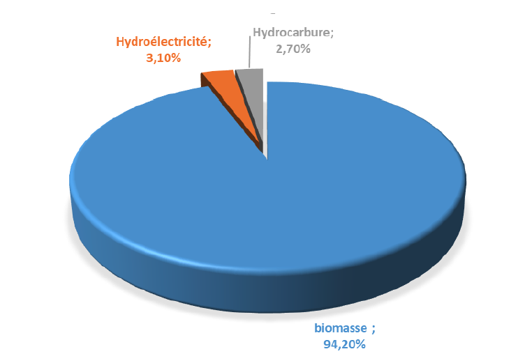
Figure 10: Bilan énergétique de la RDC pour l’année 2018
La production de l’électricité est assurée en grande partie par la Société Nationale d’Electricité (SNEL) avec une puissance installée de 2 456 MW. Quelques producteurs indépendants privées tels que Electricité du Congo (EDC) pour la ville de Tshikapa ; SENOKI à Butembo, SOKIMO, Energie du Kasaï (ENERKA) pour la ville de Mbuji-Mayi, Electricité du Nord Kivu (ENK), Virunga Sarl, NURU Sarl, Caritas Développement…, et quelques auto producteurs tels que la Sucrière de Kwilu-Ngongo, PERENCO, MIBA, Kibali Gold Mining, Gécamines certaines confessions religieuses, la Société Nationale des Chemins de fer (SNCC), etc. totalisent une capacité installée en hydroélectricité de 364 MW. Cependant, le taux d’accès de la population à l’électricité, l’un des plus faibles du monde, est estimé à 9% (SE4ALL-RDC, 2019).
Les infrastructures de transport en RDC sont parmi les moins denses, délabrées et impraticables. Dans de nombreuses provinces du pays, les connectivités vers la capitale, Kinshasa, par la route sont difficiles et la plupart des provinces ne sont pas liées entre-elles. En dépit d’avoir l’un des plus grands réseaux fluviaux dans le monde, le transport fluvial est souvent entravé par des niveaux élevés d’ensablement, de longs temps d'attente dans les ports en raison de l’insuffisance des infrastructures et de la gouvernance.
Le transport terrestre en RDC se compose principalement de véhicules routiers motorisés, car il n'existe pas d'infrastructure appropriée pour les véhicules non motorisés (c'est-à-dire des voies cyclables, un stockage sûr et des locations de vélos pratiques et abordables) et le réseau ferroviaire est quasi abandonné ou détruit. Les véhicules motorisés dépendent principalement des voitures particulières personnelles.
Les statistiques de la flotte de véhicules jusqu’en 2015 indiquent un total de 1,64 million de véhicules immatriculés sur l’ensemble du territoire national, principalement constitués de voitures particulières (INS, 2015).
Le transport en commun comprend des bus publics et privés, des mini-fourgonnettes ainsi que des taxis exclusifs et partagés, tous fonctionnant sans aucune coordination, entraînant des taux d'occupation très faibles. La part de marché des transports de masse en RDC est faible en raison de l'impraticabilité, du manque de sécurité et de la portée limitée des transports publics par rapport à l'attrait de posséder une automobile privée.
Les habitudes de conduite en RDC sont caractérisées par une autonomie relativement faible avec un taux élevé de congestion et des arrêts fréquents à de courts intervalles de temps. On estime que 50% des trajets ont une distance inférieure à 10 km, 25% des arrêts sont inférieurs à 20 secondes et le temps total d'arrêt par trajet correspond à plus de 15% du temps de trajet.
De plus, ces observations reflètent les modèles de conduite à arrêts et départs continus, entraînant ainsi un fonctionnement inefficace des moteurs à combustion interne, et un taux élevé de consommation de carburant et d'émissions de polluants en conséquence.
Le réseau routier de la RDC comprend au total 153.209 km (INS, 2014) de routes répartis comme suit :
-
58.509 km de routes d’intérêt général, dont environ 3.000 km sont revêtus.
-
7.400 km de voiries urbaines ;
-
87.300 km de routes d’intérêt local ou de desserte agricole
En termes d'activités aéronautiques, la RDC est dotée de dix-neuf (19) aéroports commerciaux dont quatre internationaux en service (Kinshasa/N’djili, Goma, Kisangani et Lubumbashi). Au moins onze compagnies aériennes (Congo Airways) et privées, opèrent pour le vol de passagers et l'affrètement des marchandises vers tous les aéroports situés en RDC. En 2016, plus de 1,77 millions de passagers aériens ont été dénombrées contre 1,61 en 2010 (Rapport ODD, 2020).
Quant aux activités fluviales et lacustres, la RDC dispose de près de vingt ports services ou ports commerciaux fonctionnels dont notamment Matadi, Boma, Kinshasa, Ilebo, Kalemie, Uvira, Goma, Bukavu, Kisangani, Mbandaka, Ubundu, Kindu, et Mushimbakye à Baraka, etc. Ces ports sont pour la plupart sous l’autorité de la Société Congolaise des Transports et Ports (SCTP). Les principaux ports dans le Sud-Est du pays sont régis par la Société nationale des chemins de fer du Congo (SNCC).
Le port de Matadi est le point d'entrée et de sortie industriel du pays. Il est relié au port de Kinshasa par la route et le chemin de fer. Le port de Kinshasa accueille environ 78% des bateaux en provenance de l’intérieur du pays.
Bien que le tissu industriel de la RDC demeure embryonnaire, ce secteur, tout comme l’agriculture, les infrastructures, l’énergie, la santé, l’enseignement, l’habitat et d’autres, est une priorité du Gouvernement de la RDC. La stratégie de développement du secteur industriel est principalement axée sur la création des Zones Économiques Spéciales (ZES), des parcs agro- industriels et des pôles de croissance.
Le déficit en infrastructure influe sur le développement industriel de la RDC, particulièrement de la manufacture. Cette dernière ne représente que 14% du PIB en 2018, soit moins de 12 USD par habitant. Ce faible niveau illustre les difficultés évidentes que rencontrent les entrepreneurs, notamment sur le plan d’accès à l’électricité et des infrastructures de transports publiques (routes, voies ferrées, aéroports, fluvial et lacustre). Les répercussions sont éloquentes notamment en termes de compétitivité économique et d’emplois créés. L’emploi dans la manufacture ne représente que moins de 7% de l’emploi total. L’enjeu pour le Gouvernement est de poursuivre la diversification des sources de croissance et d’emploi en accompagnant de manière volontariste ce sous-secteur et d’améliorer le climat des affaires pour attirer davantage d’investissements directs étrangers (IDE) (Rapport ODD, 2020).
En ce qui concerne la production minière, la RDC est « un scandale géologique » tant ses ressources minières sont importantes et diverses (Cuivre, cobalt, colombo-tantalite, or, diamants).
Moteur de croissance et important contributeur au Budget national, le secteur minier de la RDC compte parmi les secteurs stratégiques du pays. Selon les statistiques, de 2003 à 2017, la production minière est passée de 9.370 tonnes à plus d’un million de tonnes de cuivre ! Soit un accroissement de 10,75 % (INS, 2017).
3. Vision de la RDC dans le domaine des changements climatiques
La vision de la RDC en matière de lutte contre les changements climatiques est de promouvoir une économie verte, à faible émission de carbone et résiliente aux impacts des changements climatiques, tout en gérant rationnellement et durablement ses importantes ressources naturelles afin de garantir l’équilibre écologique et le bien-être social, économique, culturel et environnemental de sa population.
En effet, la RDC, comme l’ensemble des Parties à la CCNUCC, s'est résolument engagée à prendre des mesures urgentes pour atténuer ses émissions de gaz à effet de serre et s'adapter aux effets des changements climatiques, conformément à l'Accord de Paris spécialement dans son article 4. 17.
A cet effet, la RDC a ratifié la Convention-cadre des Nations Unies sur les changements climatiques (CCNUCC) en 1997, le Protocole de Kyoto en 2005 et l'Accord de Paris en 2017. En outre, elle a soumis à la CCNUCC ses trois premières communications nationales à la CCNUCC, respectivement en 2001, en 2009 et en 2015 et son Programme d'Action National d'Adaptation (PANA) en 2006. Elle a également soumis son Niveau des Emissions de Référence des Forêts (NERF) en 2018.
Bien que ses émissions des gaz à effet de serre soient parmi les plus faibles au monde (MEDD, 2015), la RDC est très vulnérable aux impacts des changements climatiques. Par conséquent, l'adaptation aux changements climatiques est une préoccupation majeure et une priorité pour le pays. La contribution de la RDC aux changements climatiques en termes d’émissions de gaz à effet de serre (GES) est relativement faible, bien que les émissions provenant de l'agriculture, de la déforestation, de l'utilisation des terres, de la consommation d'énergie, et des déchets constituent une part importante de son empreinte carbone, pour exiger une action climatique appropriée.
4. Processus de révision de la CDN
En 2015, la RDC a soumis à la CCNUCC sa Contribution Prévue Déterminée à l’échelle Nationale (CPDN), définissant ses objectifs d'adaptation et d'atténuation. Celle-ci devînt en 2017 sa première CDN et ce, conformément à l'Accord de Paris.
Cette première CDN a reposé sur la troisième communication nationale de la RDC soumise à la CCNUCC en 2014, ainsi que sur d'autres politiques sectorielles, telle que la Stratégie-Cadre Nationale REDD+ (MEDD, 2012) et autres documents nationaux clés d'orientation. La cible visée de réduction, entièrement conditionnelle, était de 17% prenant en compte trois principaux secteurs que sont Energie, Agriculture et Forêt associés aux gaz suivants : le CO2, le CH4 et le N2O sur la période 2021-2030.
La présente CDN, dont la cible de réduction fixée à 21% (conditionnelle à 19%, et inconditionnelle à 2%), actualise et renforce la première en termes des contributions à l'atténuation et à l'adaptation, d’une part, et par une collecte de données améliorée, une analyse technique approfondie et un engagement étendu des parties prenantes d’autre part. Elle inclut, outre les trois secteurs précités (Agriculture, Forêts et Energie), celui de Déchets.
4.1.1. Prévision des émissions du statu quo (BAU)
Les contributions à l'atténuation présentées dans cette CDN révisée sont basées sur la prospective d'une réduction relative des émissions de GES entre 2018-2030 par rapport aux émissions de référence estimées en utilisant les lignes directrices 2006 du GIEC18 représentant la trajectoire nationale en l'absence des mesures d'atténuation (BAU).
Cela nécessite l'élaboration de prévisions sectorielles BAU des activités et des émissions associées tout au long de la période d’engagement de la CDN ; le suivi ultérieur des progrès par rapport à cette base de référence grâce à la mise en œuvre de projets d'atténuation nécessitera la mise à jour continue du scénario d’abattement.
Les projections utilisées dans cette CDN révisée sont construites grâce à une extrapolation des émissions de la période de référence du premier Rapport Biennal Actualisé et des inventaires nationaux des gaz à effet de serre de la RDC. Celle-ci est une projection linéaire, simple, transparente, intuitive et facilement reproductible à moyen terme jusqu'en 2030, basée sur la méthodologie de niveau 1 du GIEC, dont elles évolueront selon un scénario de type business-as- usual (cours normal des affaires sans mesures d’atténuation).
Une modélisation spécifique au secteur de l’énergie, basée sur le Modèle pour l’Analyse de la Demande d’Énergie (logiciel MAED-2, IAEA, 2007), a été entreprise pour estimer le potentiel actuel d'atténuation dans ce secteur.
Le logiciel MAED-2 évalue la demande future en énergie sur la base de scénarios de développement socio-économique, technologique et démographique à moyen et long-terme. Dans ce cadre deux scénarios ont été élaborés : le scénario BAU et le scénario d’abattement. Le modèle relie de manière systématique la demande spécifique d’énergie pour produire différents biens et services identifiés dans le modèle, aux facteurs sociaux, économiques et technologiques correspondants qui affectent cette demande.
Pour les autres secteurs les scénarios BAU et d’abattement ont été construits à partir des outils de modélisation linéaire.
4.1.2. Modélisation des émissions nationales
Dans le cadre de la mise en œuvre du PNSD de la RDC, trois scénarios de développement possibles ont été envisagés pour caractériser les évolutions possibles de l’économie : le scénario de la continuité aussi appelé scénario de cours normal des affaires - BAU, le scénario qui traduit la vision du gouvernement (scénario optimiste) et le scénario intermédiaire entre les deux premiers, scénario alternatif.
(i) Scénario de la continuité19
Ce scénario se fonde sur une continuité de la situation actuelle dans laquelle le rythme de croissance économique est certes important mais pâtit des fluctuations liées aux tournures hasardeuses des marchés mondiaux. A la lumière du profil de croissance, la RDC ne pourra pas devenir un pays émergeant en 2030 et un pays développé en 2050 si des changements profonds ne sont pas envisagés dans la conduite des politiques publiques. Les réformes demandent à être approfondies pour une gouvernance plus efficace. Des transformations de taille devraient être opérées au niveau de l’appareil de production, de même faudra-t-il accroître de manière substantielle la qualité du capital humain.
Les principales hypothèses sur lesquelles repose ce scénario sont les suivantes :
-
Le secteur minier continue à être le principal levier de la croissance économique mais voit sa contribution diminuer progressivement ;
-
L’activité agricole continue à se développer mais son expansion n’est pas très importante ;
-
L’industrie manufacturière continue à jouer un rôle marginal dans la croissance économique et continue à subir les affres de la concurrence étrangère ;
-
Le secteur des services continue son expansion, essentiellement à partir du commerce de gros et de détail (sur fond d’une détérioration du compte courant) et des transports et télécoms ;
-
Les recettes fiscales issues de l’exploitation des ressources naturelles demeurent marginales ;
-
Les progrès s’observent dans le domaine de la gouvernance (politique et économique) mais ils sont relativement lents et limitent le taux d’investissement total ;
-
La population continue à croître au taux moyen annuel de 3 % comme ce fût le cas durant ces quinze dernières années, ce qui suppose que l’indice synthétique de fécondité (ISF) n’a pratiquement pas changé ;
-
Les mouvements de populations dû aux conflits se résorbe et le tissu social se reconstruit ;
-
La situation politico-sécuritaire du pays est stable ainsi que celle de la région Afrique- centrale.
(ii) Scénario traduisant la vision du gouvernement.
Ce deuxième scénario est optimiste en ce qu’il se propose de mettre en évidence les différents efforts à conjuguer par les autorités. Pour que la RDC se développe en 2050 suivant les séquences définies par le gouvernement, il faudrait envisager – courageusement et sans relâche – un ensemble d’actions cohérentes et soutenues dans le temps pour changer son paysage tant politique qu’institutionnel, économique et financier. Le maintien de la paix et le renforcement de la sécurité des personnes et de leurs biens constituent deux éléments fondamentaux de l’action à mener par le gouvernement pour bien engager le pays sur la trajectoire du développement. Au plan macroéconomique, il faudrait que l’inflation soit contenue et que le taux de change ne connaisse pas de glissements majeurs. Il faudrait pour ce faire, élargir considérablement l’espace budgétaire de l’Etat, améliorer la qualité (ou l’efficacité) de la dépense publique, constituer d’importants stabilisateurs budgétaires et les utiliser à bon escient, en cas de chocs exogènes.
(iii) Scénario alternatif.
Dans ce troisième scénario, qualifié d’alternatif, on postule que le pays devient un pays à revenu intermédiaire en 2025 et émergeant en 2030 au lieu de 2030. En 2050, le pays devient développé. Ce changement d’horizons temporels des progrès escomptés a une incidence sur les taux de croissance à afficher par l’économie ainsi que sur les politiques à mener. En dépit du changement de la longueur de la première séquence de la trajectoire, il faudrait conjuguer des efforts considérables pour que la RDC progresse comme l’entend son gouvernement. Au plan macroéconomique, il y aura nécessité de maintenir la rigueur dans la gestion des finances publiques et d’avoir de la flexibilité dans la conduite de la politique monétaire car les performances en termes de croissance requièrent une inflation ne dépassant pas 3,5 % en moyenne et un taux de change dont le glissement ne dépasserait pas 1,5 %.
Les principales hypothèses retenues pour développer ce scénario sont les suivantes :
-
L’agriculture subit des transformations majeures et devient l’un des principaux piliers de la croissance économique et de la création des emplois ;
-
Les industries extractives continuent à être dynamiques grâce à un élargissement de la chaîne de création des valeurs et une plus grande exploitation efficace des hydrocarbures ;
-
Le secteur de la construction et travaux publics connaît une expansion remarquable grâce aux efforts conjugués pour élargir l’espace fiscal de l’Etat et mobiliser de nouvelles sources de financement des infrastructures (PPP et emprunts souverains viables) ;
-
Les industries manufacturières se développent à un rythme soutenu et arrivent à pénétrer d’autres marchés ;
-
Le secteur tertiaire reste dynamique grâce aux effets de la reconstruction, de la modernisation et du développement des infrastructures ;
-
La structure du PIB change progressivement (le secteur secondaire deviendra le principal pilier de la croissance en 2050) ;
-
La gouvernance connaît des améliorations rapides et soutenues sur fond d’un ensemble cohérent de réformes qui touchent les institutions et le fonctionnement de l’économie ;
-
Des politiques sociales sont efficacement mises en œuvre pour baisser l’ISF et tirer meilleure partie du dividende démographique ;
-
Le retour des populations déplacées est possible ;
-
Le contexte politico-sécuritaire est serein aussi bien dans le pays qu’en Afrique centrale.
Des trois scénarii du PNSD seul le scénario alternatif a été pris en compte dans le secteur de l’énergie et considéré comme le scénario BAU. L'analyse utilisée pour développer cette CDN révisée a impliqué l'identification d'une gamme d'options d'atténuation (Scénario Abattement) au sein de chacun des secteurs de la CDN pour un examen plus approfondi et une analyse quantitative.
Scénario Abattement
Ce scénario se propose de mettre en évidence les différents efforts à conjuguer par le gouvernement de la RDC pour arriver à une diminution progressive et sensible des émissions de GES dans les principaux secteurs émetteurs.
Les abattements utilisés dans cette CDN révisée s'appuient sur les hypothèses ci-dessous et la renforcent de plusieurs manières :
-
Dans le domaine de la foresterie et autres affectations des terres, l’hypothèse est basée sur la stratégie REDD + qui s’est appuyée sur les études de McKinsey et al (2009)20 et aussi des hypothèses envisagées dans le document du NERF dont les projections de la croissance annuelle des émissions dues à la déforestation sont estimée à 50 MtCO2e ;
-
Dans ce secteur forestier, on pourrait obtenir un cumul de réduction des émissions de 2,2 à 2,5 Gt CO2e d’ici 2030 ;
-
La part des émissions ne pouvant pas faire l’objet d’une réduction pourra être compensée par les effets des projets d’afforestation et de reforestation destinés à la séquestration de carbone, à hauteur d’un potentiel cumulé de séquestration estimé de 1,2 à 1,4 Gt CO2e ;
-
A l’horizon 2030, l’effet conjugué des leviers d’atténuation et de séquestration potentiels pourrait à la fois compenser le total des émissions estimées de 410 à 700 Mt CO2e selon le scénario de référence BAU, et constituer un puits de carbone d’une capacité de l’ordre de 20 Mt CO2e ;
-
Le scénario de référence BAU de l’évolution de la dégradation et de la déforestation en RDC et des émissions y afférentes, a été développé sur la base d’hypothèses ‘volontaristes’ de développement socio-économique et démographique du pays. Dans ce scénario, la déforestation atteindrait 12 à 13 millions ha d’ici 2030, et la dégradation 21 à 22 millions ha.
-
En agriculture, il est envisagé de doubler les superficies cultivées de 8 à 16 millions d’hectares, pour observer une croissance accélérée (+6%/an) et ainsi assurer l’équilibre alimentaire d’ici 2025 (nourrir 116 millions de consommateurs) et ce, grâce à une modernisation du secteur.
-
Dans le secteur Energie, les efforts d’atténuation pourront être concentrés dans le secteur industries, transport et résidentiel avec les hypothèses suivantes :
-
Diminution plus accentuée des intensités énergétiques des produits pétroliers, des utilisations spécifiques de l’électricité, de l’utilisation de la chaleur. Ceci traduit une amélioration de l’intensité énergetique beaucoup plus efficace de l’économie.
-
Dans le secteur agricole l’abattement va beaucoup plus concerner la gestion des résidus agricoles car le programme de développement agricole prévoit une augmentation des superficies
-
Dans le secteur déchet, pour le scénario d’abattement (organisation du secteur : accès des 60% de ménages au système de gestion de déchets et ce, en développant des mécanismes opérationnels dans au moins 10 provinces.
Pour ce volet adaptation, l’approche méthodologique a consisté à un examen approfondi des documents pertinents sur l'adaptation aux changements climatiques. Les différentes communications nationales soumises par la RDC à la CCNUC nous ont permis d’avoir un aperçu plus ou moins large sur le degré de vulnérabilité des différents acteurs et secteurs économiques directement affectés par les changements climatiques et les risques de catastrophes ainsi que les mesures proposées pour y faire face.
Les leçons apprises du PANA (agriculture, protection de la zone côtière et femmes et enfants) ont permis de comprendre la pertinence des actions envisagées et les mesures à envisager pour plus d’efficacité et d’efficience dans le renforcement de la résilience face aux effets des changements climatiques.
De plus, les résultats du processus d’élaboration du PNA initial de la RDC et des différentes études spécifiques menées à cet effet, notamment (i) l’évaluation institutionnelle des entraves et besoins pour l’intégration de l’adaptation dans la planification du développement ; (ii) l’évaluation des besoins en capacités humaines ; (iii) la prise en compte du genre et des Peuples Autochtones dans l’élaboration et la mise en œuvre des mesures d’adaptation ; et (iv) les opportunités de l’implication du secteur privé dans le financement de l’adaptation, ont permis d’approfondir la réflexion sur les actions pertinentes envisagées dans cette CDN et l’établissement des besoins de financement.
Enfin, la sélection des interventions d'adaptation, des paramètres comprenant les indicateurs, les bases de référence, les jalons et les cibles a été menée à travers des ateliers, suivie de consultations approfondies avec des équipes d'experts sectoriels à travers diverses discussions itératives avec des acteurs de différents ministères sectoriels et les délégués de la société civile.
5. Contribution à l'atténuation
La RDC, Partie à la CCNUCC, a initié des efforts pour mettre en œuvre des activités qui conduisent à une réduction des émissions en fonction de ses circonstances et capacités nationales. Cette section est constituée d’un bref rappel sur l’analyse de la tendance des émissions des gaz à effet de serre (GES) dans les secteurs dont les mesures sont identifiées et propose des stratégies d’atténuation conséquentes. Elle présente en plus les autres initiatives relatives aux actions d’atténuation des gaz à effet de serre en RDC.
Les mesures d'atténuation mises en œuvre par la RDC portent principalement sur le secteur de la foresterie, notamment la mise en œuvre de sa stratégie nationale de réduction des émissions dues à la déforestation et la dégradation des forêts (REDD+). Outre la stratégie REDD+, la contribution déterminée à l’échelle nationale de la RDC, présente certaines mesures et actions d’atténuation dans les secteurs de l’énergie, des transports, de l'agriculture et des déchets.
Cependant, à ce jour, ces peu d’initiatives sont moins documentées. Toutefois, la RDC s'est engagée à améliorer son système de collecte et de gestion des données et à formaliser les arrangements
institutionnels qui soutiennent la collecte, l'analyse, le traitement et la communication d'informations à long terme sur les mesures d'atténuation et les efforts pour explorer les co-bénéfices y associés.
En outre, la RDC ne dispose pas de méthodologie spécifique et hypothèses associées pour évaluer les effets des actions envisagées. Par conséquent, le renforcement des capacités en faveur des promoteurs des projets et différentes parties prenantes s’avère indispensable au niveau national pour améliorer le suivi et la notification des activités sectorielles d'atténuation.
5.1. Analyse des tendances des émissions des gaz à effet de serre (GES).
Les Lignes Directrices 1996 révisées du GIEC ont été mises en œuvre pour l’estimation des émissions de GES reportées dans les trois précédentes Communications Nationales sur les changements climatiques de la RDC. Le premier Rapport Biennal Actualisé par contre est basée sur l’approche de niveau 1 du GIEC conformément aux Lignes Directrices 2006 du GIEC et ses améliorations21. .
L’analyse de la tendance historique des émissions des GES, réalisée dans le cadre du 1er Rapport Biennal Actualisé de la RDC, qui se veut pays émergeant à l’horizon 2030 et ce, dans une vision de développement vers une économie de plus en plus décarbonnée, montre que, durant la période de 2000-2018 (tableau 3), les émissions du pays sont prédominées par le secteur « Foresterie et autres Affectation des Terres (FAT) » avec près de 86% des émissions, suivi de loin par les secteurs Déchet, Energie et Agriculture avec respectivement 11%, 0,86% et 0,61%.
|
Energie |
PIUP22 |
Agriculture |
Foret |
Déchet |
|
|
2000 |
3,36 |
0,09 |
3,70 |
483,74 |
39,79 |
|
2001 |
3,69 |
0,11 |
3,86 |
483,74 |
51,47 |
|
2002 |
4,02 |
0,14 |
3,76 |
483,74 |
51,83 |
|
2003 |
4,35 |
0,18 |
3,76 |
483,74 |
53,08 |
|
2004 |
4,68 |
0,24 |
3,75 |
483,74 |
54,33 |
|
2005 |
5,01 |
0,29 |
3,75 |
483,74 |
56,49 |
|
2006 |
5,34 |
0,33 |
3,76 |
483,74 |
59,70 |
|
2007 |
5,67 |
0,34 |
3,77 |
483,74 |
64,28 |
|
2008 |
6,00 |
0,24 |
3,76 |
483,74 |
69,87 |
|
2009 |
6,33 |
0,27 |
3,76 |
483,74 |
76,94 |
|
2010 |
6,66 |
0,27 |
3,89 |
483,74 |
82,24 |
|
2011 |
6,99 |
0,26 |
4,09 |
830,53 |
88,61 |
|
2012 |
7,32 |
0,23 |
5,19 |
830,53 |
96,70 |
|
2013 |
7,65 |
0,25 |
5,73 |
830,53 |
106,47 |
|
2014 |
7,98 |
0,19 |
6,42 |
830,53 |
116,84 |
|
2015 |
8,31 |
0,23 |
5,97 |
529,23 |
128,87 |
|
2016 |
8,64 |
0,15 |
5,99 |
529,23 |
140,82 |
|
2017 |
8,97 |
0,15 |
5,70 |
529,23 |
152,82 |
|
2018 |
9,30 |
0,13 |
5,48 |
529,23 |
164,81 |
La tendance à l’augmentation des émissions des GES des secteurs hors forêt, c’est-à-dire l’énergie avec les transports, le résidentiel, et l’industrie manufacturière, les Procédés Industriels et Utilisations des produits (PIUP), l’agriculture et le traitement des déchets, est expliquée dans le tableau 2 ci-après :
Tableau 3: Contribution des secteurs hors forêts à la tendance des émissions
|
Secteur |
Catégories |
Contributions aux émissions |
|
Energie |
Transport |
La flotte des véhicules est constituée essentiellement des véhicules de seconde main mais aussi, par l’augmentation de possession de véhicule personnelle |
|
Industrie manufacturière |
La mise en service sporadique des centrales thermiques pour compenser les coupures intempestives de la fourniture de l’hydroélectricité dans les industries |
|
|
Agriculture |
Fermentation entérique |
Types de fourrages à base d’herbe (herbe fraîche), les émissions de méthane par kg de matière sèche ingérée varient assez peu. En fait, les fourrages les plus digestibles émettent plus par kg de matière sèche ingérée que les fourrages les moins digestibles, mais ils fournissent également plus de nutriments énergétiques (acides gras volatils). |
|
Gestion des sols agricoles |
Augmentation continue des superficies agricoles, plus caractérisées par une augmentation du nombre d’exploitations agricoles, constituées des abattis dans la zone forestière et le long des grands cours d’eau à l’intérieur du pays, tout ceci étant lié à un fort taux de croissance démographique |
|
|
Brulage de résidus agricoles |
||
|
La culture du riz |
Augmentation de périmètre irrigué de riziculture et de la demande |
|
|
Déchets |
Sites d’évacuation de déchets solides |
Liée à l’augmentation de la population et la non-organisation du secteur |
|
Procédés Industriels et Utilisations des produits |
La production du ciment |
Augmentation de la demande immobilière et du nombre d’unité de production du ciment à travers le pays |
|
La production de chaux |
L’augmentation des émissions de méthane (CH4) et du protoxyde d’azote (N2O) dans le secteur résidentiel, due à la croissance démographique est consécutive à la forte demande du bois énergie, notamment pour la satisfaction de besoins de cuisson dans les ménages.
5.2. Mesures d’atténuation des GES sur la période 2021-2030
Vue la dynamique de développement dans laquelle la RDC s’engage à l’horizon 2030, ses efforts devront se matérialiser dans la mise en œuvre des diverses mesures d'atténuation, principalement dans les secteurs Foresterie et autres Affectations des Terres, et Déchets suivi de l’Energie et l’Agriculture.
C’est dans ce contexte que la RDC a élaboré sa Stratégie-cadre nationale REDD+ et celle de développement sobre en carbone pour laquelle deux mesures d’atténuation dans le cadre de l’initiative des mesures d’atténuation appropriées au niveau national (NAMAs) ont été identifiées dans le secteur Énergie portant sur la récupération de gaz torché des plateformes d’exploitation pétrolière, à Muanda, et sur l’amélioration des techniques de carbonisation.
Aussi, la RDC compte mettre en œuvre une politique énergétique nationale cadre en matière d’énergie visant spécifiquement les stratégies de cuisson propre (GPL, cuisinière électrique, etc.), tout en y associant les préoccupations de l’augmentation de la part des énergies renouvelables dans son mix énergétique, de la promotion de l’efficacité énergétique, de l’amélioration des transports publics, et de la valorisation énergétique des déchets.
Ainsi, la RDC s’engage pour une contribution inconditionnelle et conditionnelle combinée à hauteur de 21% de réduction des émissions totale des GES par rapport au BAU en 2030 (19% conditionnel et 2% inconditionnel) équivalant à un niveau d'atténuation estimé jusqu'à 650 Mt CO2e à l’horizon 2030.
Les principaux leviers d’intervention identifiés portent essentiellement sur :
A. Volet I : Foresterie et activités liées à la forêt :
Ce volet devrait contribuer de 182 à 192 Mt CO2e au potentiel total d’atténuation des émissions en 2030 (McKinsey et al.,2009). Ce potentiel a été estimé par activité forestière comme suit :
-
Exploitation légale industrielle et artisanale : environ 19 Mt CO2e grâce à la réduction des volumes d’exploitation par ha à des niveaux d’exploitation durable et à émissions très limitées (de 15 à 10 m³ par hectare).
-
Exploitation illégale : potentiel de réduction d’environ 22 à 23 Mt CO2e. Ce potentiel se décompose en plusieurs leviers aux spécificités régionales. Le premier porte sur l’éradication de l’exploitation illégale à destination des pays voisins (Rwanda, Burundi, Ouganda) grâce au renforcement des contrôles d’ici 2030 dans les provinces Nord et Sud Kivu ainsi que les provinces Tshopo, Ituri, Haut-Uele, Bas-Uele, et du Kongo-Central. Le second levier d’atténuation consiste à convertir l’exploitation illégale destinée aux marchés locaux en exploitation légale durable. Le troisième levier est la reforestation pour fournir durablement du bois d’œuvre de moindre qualité aux marchés locaux, essentiellement aux populations urbaines.
-
Autres activités de dégradation et déforestation liées aux activités de la population (chasse durable par exemple) ou à l’utilisation des techniques de lutte contre les feux de brousse.
-
Afforestation ou boisement : potentiel de réduction des émissions de 61 à 65 Mt CO2e sur des aires marginales (savanes arbustives et mosaïques savanes forêts) de l’ordre de 7 millions d’ha.
-
Reforestation (reboisement) : potentiel de réduction des émissions de 80 à 84 Mt CO2e dans 4 millions d’ha de forêts dégradées ou déboisées. Dans ce contexte, la RDC envisage identifier spatialement ces forêts et les intégrer dans la législation nationale d’ici 2025 et ainsi procéder à l’établissement d’au moins 2,5 millions d’hectares de concessions forestières communautaires locales d’ici 2025, suivant un guide de bonnes pratiques approuvé d’ici 2023.
B. Volet II : Agriculture et Elevage en milieu forestier : quatre leviers d’atténuation contribuant à hauteur de 180 à 187 Mt CO2e au potentiel total d’atténuation (McKinsey et al.,2009) :
-
Agriculture vivrière : principalement itinérante et sur brûlis : potentiel de réduction des émissions de 15 à 17 Mt CO2e en 2030, fondé sur un programme d’amélioration de la productivité touchant 50% des exploitations vivrières.
-
Agriculture commerciale extensive à petite échelle, destinée principalement au marché local : potentiel de réduction d’environ 65 à 70 Mt CO2e, lié à la mise en place de deux types de programmes pour l’accroissement de la productivité et touchant environ 75% des exploitations. Le premier programme touchant environ 25% des exploitations vise la mise en place de programmes de vulgarisation et la fourniture d’intrants sur une période de 20 ans. Le deuxième programme vise à mettre en place des projets d’agrégation touchant 50% de la population.
-
Agriculture commerciale intensive, destinée principalement à l’export (huile de palme, cacao et café) : potentiel de réduction d’environ 80 Mt CO2e. Cette réduction découle de la relocalisation en savanes arbustives ou mosaïques savanes-forêts de nouvelles plantations qui auraient été établies dans des forêts primaires (causant une déforestation de 1,6 à 3 millions d’ha dans le scénario de référence). Les plantations réhabilitées sur des anciens sites (environ 1,6 million d’ha) ne sont pas considérées dans ce potentiel d’atténuation des émissions.
-
Elevage : potentiel de réduction d’environ 20 Mt CO2e.
Dans le cadre de la Lettre d’intention prévue pour signature entre la RDC et l’Initiative pour les forêts de l’Afrique centrale (CAFI) pour la période 2022-2031, la RDC s’engage à ne pas attribuer de concessions agricoles industrielles dans les forêts de grande valeur (dont la définition sera élaborée à travers un processus participatif national) et dans les tourbières ; à orienter le développement agricole en priorité vers les savanes.
C. Volet III : Impacts de la croissance urbaine et des secteurs industriels sur la forêt : un levier d’atténuation contribuant à hauteur de 45 à 55 Mt CO2e au potentiel total d’atténuation :
Réduction de la demande en bois de chauffe non-durable, destiné principalement à la consommation de la population urbaine : environ 45 à 55 Mt CO2e (McKinsey et al.,2009). Cet objectif sera appuyé par l’engagement de la RDC dans la Lettre d’intention prévue pour signature avec CAFI pour la période 2022-2031, de diminution de 10% la part du bois-énergie non durable dans deux grands centres urbains d’ici 2025 et de 50% dans six grands centres urbains d’ici 2031. Trois programmes sont susceptibles d’être développés, dans le cadre de la stratégie, visant les ménages urbains et périurbains : le premier s’appuie sur la réduction de la demande à travers l’approvisionnement d’environ 5 millions de ménages en fours améliorés ou efficients (permettant de réduire d’environ 50% la consommation de bois de chauffe). Le deuxième programme vise la promotion de l’utilisation de l’hydroélectricité en lieu et place du bois-énergie à travers la prise en charge d’une partie de la facture de fourniture d’électricité pour 5 millions de ménages, situés principalement dans les provinces du Sud (Haut-Katanga, Tanganyika, Lualaba, Haut-Lomami, Lomami, Sankuru, Kasaï, Kasaï Central, Kasaï-Oriental). Le troisième programme consiste à boiser les zones marginales autour des villes dans le but d’assurer la production et l’utilisation durable de bois de chauffe à travers les foyers améliorés.
D. Transport : deux leviers d’atténuation contribuant à hauteur de 27 à 37 Mt CO2e (McKinsey et al.,2009) au potentiel total d’atténuation se focaliseront sur l’amélioration du transport public urbain et interurbain tout en développant des plans directeurs de transport et la promotion du transport multimodal pour les passagers et les marchandises.
E. Gestion des déchets : deux leviers d’atténuation contribuant à hauteur de 37 Mt CO2e (McKinsey et al.,2009) au potentiel total d’atténuation. Quatre actions majeures sont envisagées, dans le cadre de la stratégie, visant les ménages urbains et périurbains : la première s’appuie sur le renforcement du cadre institutionnel et légal pour la gestion de déchets ; la seconde portera sur un programme de gestion rationnelle des déchets ; la troisième action consistera à un programme de valorisation énergétique des déchets basé sur la promotion de la cuisson éco-énergétique visant l’utilisation des déchets ménagers biodégradables et la récupération de biogaz des décharges ; la quatrième action visera le développement de systèmes de compostage aérobie à l'échelle commerciale ; et la dernière consistera à la production d’énergie et engrais organique à partir de déchets solides, eaux usées et boues.
F. Solutions fondées sur la nature :
En réponse aux préoccupations de la CCNUCC, la RDC développe déjà des solutions fondées sur la nature23 depuis des décennies. Actrice active dans les processus environnementaux et l’apport sur l’atténuation du climat mondial, la RDC a pris des engagements sous différentes conventions. Il s’en suit que :
-
Au terme de la Convention sur la biodiversité, la RDC a déjà affecté 13% de son territoire national à l’érection des parcs nationaux, soit 30.483.180 Ha ;
-
Des progrès considérables sont réalisés, avec l’engagement de la RDC de restaurer 8 millions d’ha des terres dégradées, aux termes du Défi de Bonn. A cela s’ajoute également le projet « 1 Milliard d’arbres », avec la participation des jeunes, notamment les élèves ;
-
Dans les termes de la Conférence des Parties de Bali avec un focus sur la réduction des émissions de gaz à effet de serres et ainsi que sur le renforcement du stock de carbone forestier, la Stratégie-cadre nationale REDD+ de la RDC vise la stabilisation du couvert forestier à 63,5% ; le pays cherche de fait une augmentation de son couvert forestier de 6,5%, soit 15.242.500 d’ha.
-
le Gouvernement de la RDC s’engage à sécuriser les limites des aires protégées et, le cas échéant, conditionner tout déclassement pour cause d’utilité publique à l'application stricte du cadre légal en vigueur24. Le Gouvernement s’engage également à atteindre, d’ici 2030, l’objectif d’au moins 30% d’espaces nationaux sous statut de protection, sous différents modes, tels que reconnus par la loi (les aires protégées et leurs zones tampon, les concessions de conservation, les zones dédiées par les communautés locales à la préservation des forêts dans les plans simples d’aménagement du territoire définis de manière participative, les séries de conservation dans les concessions forestières, les zones de restriction des plans d’aménagement, etc.), selon les recommandations de l’initiative 30x30 dans le cadre de la Coalition pour une Grande Ambition25, à laquelle la RDC est partie.
Les différents paysages de haute valeur de conservation dont regorge la RDC sont une preuve additionnelle des services écosystémiques rendus par les forêts de la RDC à l’ensemble de l’humanité. A tous ces apports s’ajoutent les tourbières comme une importante solution fondée sur la nature, rehaussant ainsi les ambitions climatiques ainsi que les apports du pays aux politiques, engagements et conventions. Pour cela, les mesures d’atténuation prévues pour le secteur Foresterie et autres Affectations de Terre dans le présent document intègrent la restauration des zones humides, notamment les tourbières utilisées en agriculture et en élevage, ainsi que la cartographie et l’évaluation des tourbières.
Si les études approfondies confirment l’ampleur des tourbières de la République Démocratique du Congo, leur apport en termes de contribution basée sur la nature devra rehausser l’ambition de la contribution nationale. En effet, des estimations préliminaires26 réalisées par Greifswald Mire Centre (figure 4), il ressort qu’en dehors des tourbières de la cuvette centrale sur la carte ci- dessous), la République Démocratique du Congo dispose d’autres formes des tourbières non encore évaluées jusqu’ici. C’est le cas les tourbières de la forêt de plaine de l'Ouest, de la Côte Atlantique, de la Vallées rift Albertine ainsi que du Plateau de Katanga.

Figure 11: Etendue des tourbières en RDC
Les connexions entre les tourbières et les différents mécanismes que sont la stratégie REDD+, les réformes en cours particulièrement l’aménagement du territoire et la réforme foncière, étant importantes, la RDC prévoit de :
-
Définir clairement les principes de protection juridique et des protocoles pour le chevauchement d’usages des terres en zones de tourbières dans la Stratégie Nationale des Tourbières et/ou les inclure dans la réforme en cours de l’aménagement du territoire ;
-
Adopter des dispositions claires de protection des tourbières dans la révision envisagée du Code forestier, en capitalisant sur le Programme de Gestion Durable des Forêts (PGDF) et le nouveau plan d'investissement REDD+ de la RDC pour 2021-2030, dans le cadre de la Stratégie-Cadre Nationale REDD+, appuyés par CAFI, avec pour objectif de considérer la valeur élevée des forêts de tourbières dans la séquestration du carbone et la fourniture d'autres services écosystémiques d’importance majeure ;
-
A travers la Stratégie Nationale des Tourbières, clarifier et mettre en œuvre, dans la mesure du possible, les engagements pris par le biais des conventions et initiatives internationales en faveur de la protection et de la gestion durable des tourbières, dont la Convention de Ramsar ;
-
Investir dans le renforcement des capacités et de l'expertise nationales, aussi bien sur le plan institutionnel que sur plan technique, relativement à la gestion durable des tourbières ;
-
Mettre à contribution l'intérêt actuel pour les tourbières du bassin du Congo en vue de faire avancer le programme et les priorités actuels du gouvernement de la RDC en matière de valorisation et de protection des tourbières ;
-
Définir un plan de Communication, Information et Éducation en connexion avec le programme de renforcement des capacités nationales sur les tourbières ;
-
Assurer une meilleure connexion entre la Stratégie Nationale des Tourbières et les différentes initiatives internationales, sous régionales et nationales, en rapport avec la gestion et la valorisation des tourbières.
En plus des mesures de restauration des tourbières, les mesures d’atténuation prévues pour le secteur forestier dans le présent document s’appuient d’autres solutions fondées sur la nature. Il s’agit notamment des mesures suivantes :
-
Promotion des techniques d’afforestation et reforestation traditionnelle et moderne en vue de préserver les forêts ;
-
Appui au développement de la foresterie communautaire comme outil de conservation de la biodiversité et de lutte contre la perte du couvert forestier en milieu rural ;
-
Valorisation des outils MEOR (Méthodologie pour l'Évaluation des Opportunités de Restauration) à l’échelle nationale en y intégrant la valorisation des connaissances traditionnelles dans la conservation de la biodiversité autour des aires protégées ; et
-
Appui aux initiatives permettant la mise en place de la plate-forme sur la restauration des forêts et des paysages.
En mettant en application ces mesures, la RDC s’appuiera sur le Standard mondial pour les solutions fondées sur la nature27.
La figure 4 ci-dessous illustre les projections d’émissions pour le scénario de référence BAU des émissions du secteur AFAT, totalement corrélées au bilan national des émissions. Le graphique montre que les émissions ont plus que doublé sur la période 2010 à 2014, atteignant 830,53 Mt éCO2. Entre la période 2014 et 2018, il s’est observé une nette tendance à la réduction des émissions, de l’ordre de 36%, qui se justifierait aux importants investissements et aux changements structurels (des mesures et réglementations) de gestion dans le secteur visant les moteurs de la déforestation et ayant pour but d’infléchir la courbe de déforestation. L’année 2015 a ainsi constitue le démarrage de la phase de mise en œuvre de la REDD+, communément appelée phase 2 de la REDD+.
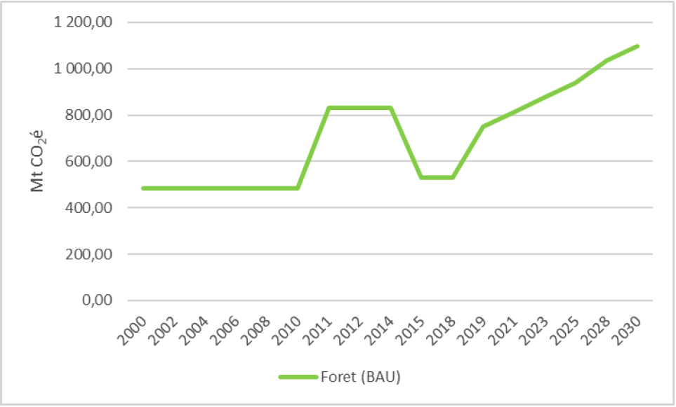
Figure 12: Projection des émissions du secteur Foresterie et autres Affectations des Terres (BAU)
L’estimation de réductions de GES dans le secteur AFAT, visée à 28% (Figure 12), est basée sur la réalisation de 27 mesures d’atténuation intégrées d’ici 2030 (Tableau 4).
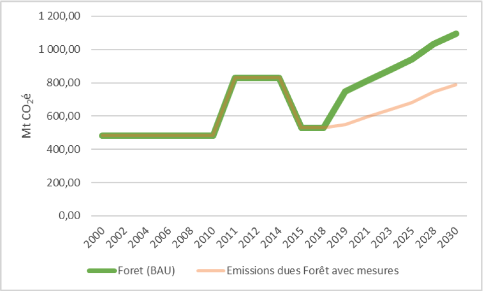
Figure 13: réductions de GES dans le secteur AFAT
Les figures 9 et 10 montrent l’évolution des projections des émissions des secteurs Energie, Agriculture et Déchets au même horizon dans les scénarios BAU et avec mesures.
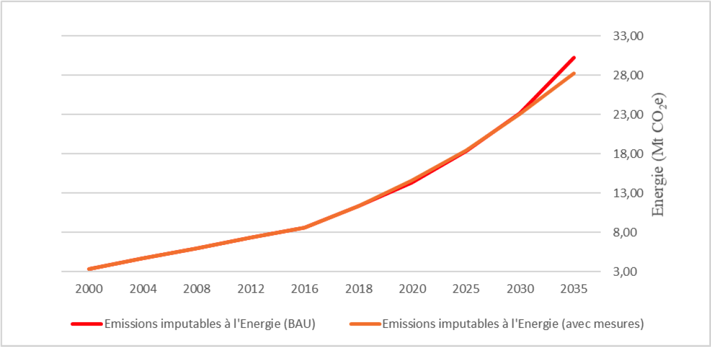
Figure 14: Evolution de projections des émissions du secteur Energie
Le secteur déchet est caractérisé par une progression des émissions imputables (i) à l’évacuation de déchets solides (90,4%) de toute nature générés par les ménages, les collectivités et les entreprises (commerces, industries, construction, les résidus agricoles, etc.), (ii) au rejet des eaux usées domestiques (6,8%), et à la combustion à l’air libre. Ces émissions représentent environ 11% en moyenne de l’ensemble des émissions nationales.
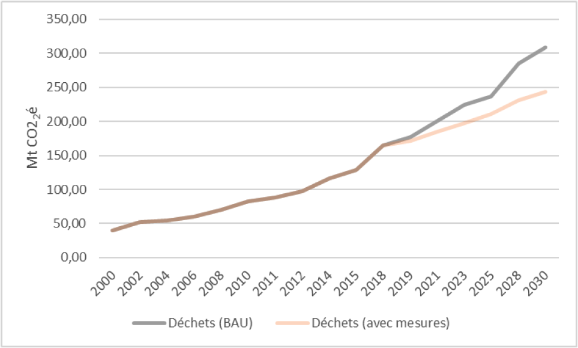
Figure 15: Evolution de projections des émissions du secteur Déchets
La mise en œuvre intégrale de ces différents leviers entraînerait à terme des réductions significatives des émissions.
Le tableau 4 présente la synthèse des interventions que la RDC compte mettre en œuvre pour pouvoir atteindre la cible de réduction visé à l’horizon 2030.
Tableau 4 : Synthèse des options d’atténuation des émissions des GES et coûts estimatifs associés.
|
Secteur |
Objectif |
Actions |
Indicateurs |
Potentiel de réduction en 2030 |
Co-bénéfices d'adaptation |
Coût estimatif (Mds USD)28 |
Période de mise en œuvre |
Alignement avec les ODD |
|
Energie |
Réduire la demande en bois énergie et faciliter l’accès à l’électricité |
Électrification rurale, péri- urbain et urbaine par des sources d’énergies renouvelables |
Pour l’hydroélectricité de 3GW en 2020 à 4GW en 2030 Pour éolien, solaire et géothermique de 2,9 MW en 2020 à 42,7 MW en 2030 8 à 10 unités installées |
74,2 à 94,6 Mt CO2e |
1,95 |
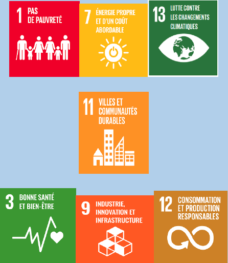 |
||
|
Promotion des foyers améliorés & amélioration de la carbonisation |
Passer de 12 -15% à 25-30% de rendement ) 3 millions de ménages disposent des unités de FA29 |
1,05 |
||||||
|
Promotion des énergies renouvelables |
Loi de 2014 sur les énergies renouvelables modifiée )Nombre des résidences et les institutions, les industries manufacturières équipés des systèmes solaires photovoltaïques |
0,28 |
||||||
|
Transision vers la cuission écoénergétique |
Nombre des ménages utilisant des technologies des biogaz, de GPL ; et briquettes à base des résidus agricoles ou des déchets ménagers biodégradables |
0,63 |
||||||
|
Plantations industrielles - Bois-énergie |
130.000 ha de plantations à but énergétique |
0,18 |
||||||
|
Développer et améliorer le transport urbain et interurbain |
Promotion de transport de masse |
Au 10 centres urbains (cités et villes) dotés de : plan directeur de circulation ; )Nouveau système de transport public (Bus, Rail, etc.) ; i) Nombre de infrastructures voies de communication routière, ferroviaire (interconnexion), fluviales et lacustres construites/réhabilitées; ) Nombre d’unités de montage de véhicules neufs à faibles émissions localement (en termes de transfert de technologies) |
1,1 |
|||||
|
Agriculture |
Sédentariser l’agriculture |
Promotion des itinéraires techniques visant la sédentarisation des agriculteurs particulièrement dans les zones forestières, y compris les zones humides |
1 million d’ha des périmètres irrigués aménagés et équipés )Environ 150 organisations des agriculteurs et coopératives paysannes établies ; i) Nombre d’agriculteurs utilisant le guide de bonnes pratiques agricole pour la gestion des jachères, et l’utilisation des fertilisants naturels ; ) Nombre de campagnes de sensibilisation et vulgarisation agricole par an |
180 à 187 Mt CO2e (43%) |
1,7 |
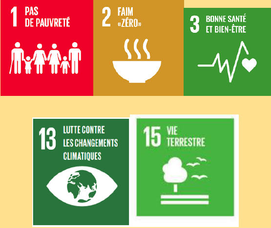 |
||
|
Intégration de l’agriculture dans le plan national d’aménagement du territoire, développé dans la mise en œuvre de la stratégie REDD+ |
Existence de : la politique d’aménagement du territoire ; un plan national d’aménagement du territoire |
0,2 |
||||||
|
Promotion de l’agriculture intensive dans les zones savanicoles en vue de limiter la pression sur les forêts naturelles |
1,6 millions d’ha de terres à usage agricole intensif aménagés )Nombre des ménages agricoles utilisant les des déchets et des sous-produits de l’élevage sous forme de biogaz et de fertilisants naturels |
1,33 |
||||||
|
Promotion d’une exploitation rationnelle et durable des espaces de production agricole pour préserver les conditions agroécologiques en vue d’assurer la stabilité du couvert forestier |
1,2 |
|||||||
|
Intensification de la production agricole vivrière (glucides, oléagineux, légumineuses) en zone savanicole et en forêt dégradée |
1,3 |
|||||||
|
Intensification de la production agricole de rente en forêt secondaire et en savane, mais avec des systèmes durables agroforestiers (cacao, café, bananier, cultures spéciales) permettant de valoriser les avantages comparatifs de la paysannerie pour ces cultures |
Nombre de nouvelles plantations des cultures pérennes et agroforesterie en savanes arbustives ou mosaïques savanes- forêts |
1,3 |
||||||
|
Vulgarisation et sensibilisation sur les bonnes pratiques |
Nombre de campagnes de sensibilisation et vulgarisation sur les bonnes pratiques agricole par an |
0,8 |
||||||
|
Développement de l'élevage intensif |
Nombre de fermes et systèmes agrosylvopastoraux, |
1,2 |
||||||
|
Foresterie et autres Affectations de Terre |
Réduire la déforestation et la dégradation des forêts |
Promotion des techniques d’afforestation et reforestation traditionnelle et moderne en vue de préserver les forêts |
760 milles ha de forêts restaurés 15% de 7 millions d’ha d’aires marginales reboisées |
182 à 192 Mt CO2e (soit 28%) |
1,45 |
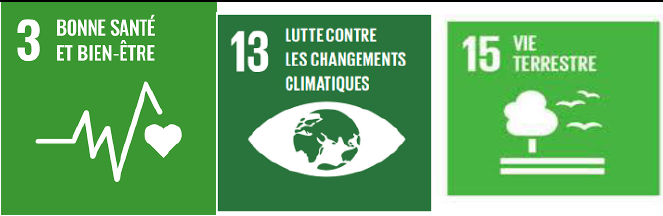 |
||
|
Appui au développement de la foresterie communautaire comme outil de conservation de la biodiversité et de lutte contre la perte du couvert forestier en milieu rural |
Nombre de campagnes de sensibilisation et vulgarisation d’exploitation forestière à impact réduit (EFIR) |
1,5 |
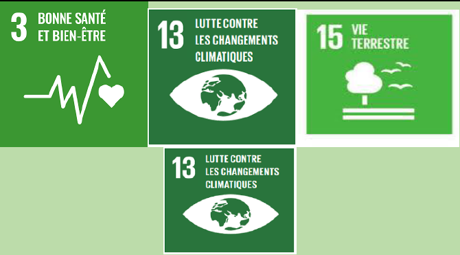 |
|||||
|
Restauration des zones humides, notamment les tourbières utilisées en agriculture et en élevage |
Superficie des zones humides mis en défens et/ou restaurée |
1,3 |
||||||
|
Valorisation des outils MEOR (Méthodologie pour l'Évaluation des Opportunités de Restauration) à l’échelle nationale en y intégrant la valorisation des connaissances traditionnelles dans la conservation de la biodiversité autour des aires protégées |
Nombre de campagnes de formations, sensibilisation et vulgarisation |
0,85 |
||||||
|
Appui aux initiatives permettant la mise en place de la plate-forme sur la restauration des forêts et des paysages |
Textes juridiques mettant en place la plate-forme sur la restauration des forêts |
1,2 |
||||||
|
Renforcement de la gouvernance forestière, notamment la lutte contre l’exploitation illégale du bois d’œuvre et autres ressources forestières en tenant compte des études, analyses et outils produits dans la mise en œuvre des différents processus forestiers pertinents tels que les APV-FLEGT |
Existence de dispositif de surveillance et de répression de la fraude |
1,2 |
||||||
|
Renforcer le stock de carbone |
Gestion durable de l’exploitation de bois d'œuvre |
1,8 |
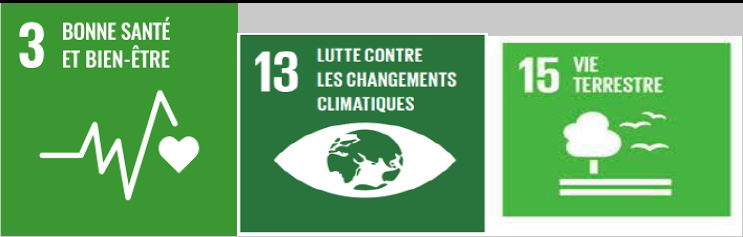 |
|||||
|
Gestion durable et réhabilitation des exploitations minières et pétrolières |
Superficie des anciennes exploitations minières et pétrolières réhabilitées/restaurées conformément au Plan de gestion Environnementale (PGE) |
0,09 |
||||||
|
Lutte contre les feux de brousse |
Superficie mise en défens ; Existence de systèmes de surveillance et de plan de gestion des feux de brousses |
0,11 |
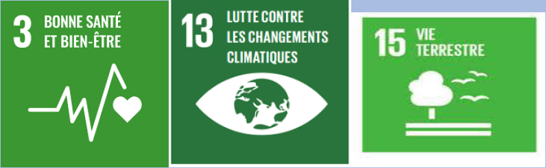 |
|||||
|
Cartographie et évaluation des tourbières |
Existence de carte de location de zones de tourbières |
0,52 |
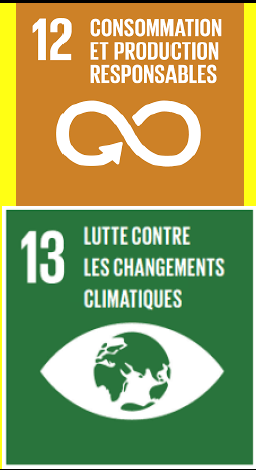 |
|||||
|
Déchets |
Améliorer l'accès aux services de gestion des déchets |
Renforcement du cadre institutionnel et légal pour la gestion de déchets |
Existence de textes légaux règlementant la gestion de déchets |
37 Mt CO2e |
0,14 |
|||
|
Programme de gestion rationnelle des déchets |
0,44 |
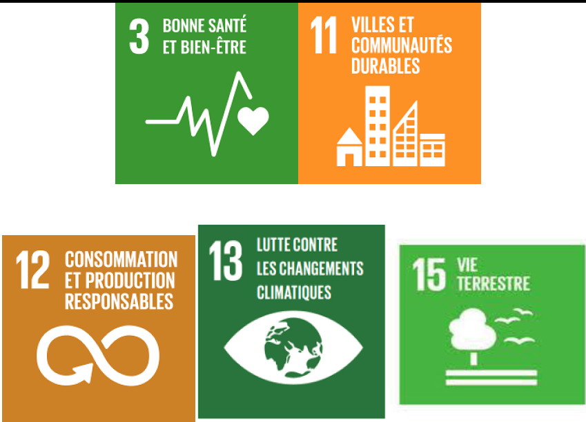 |
||||||
|
Valoriser les déchets |
valorisation énergétique des déchets (réduction des émissions de CH4 des sites d'enfouissement) |
Nombre de Kwh produit issus de la récupération des gaz de décharge Nombre des ménages ayant accès à cette technologie |
0,07 |
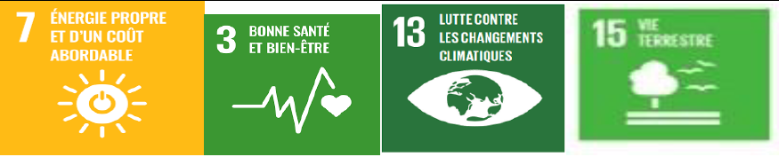 |
||||
|
Utilisation des gaz de décharges |
0,29 |
|||||||
|
Compostage aérobie |
Nombre des digesteurs disponibles ; Nombre d'usines de récupération d'énergie et autres que le gaz de décharges dans différentes zones urbaines. |
0,21 |
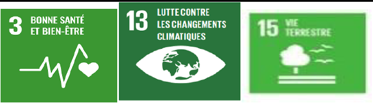 |
|||||
|
Production d’énergie et engrais organique à partir de déchets solides, eaux usées et boues fécales |
0,21 |
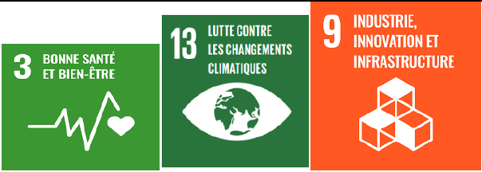 |
||||||
|
Total |
25,6 |
|||||||
6.1. Analyse de la vulnérabilité aux impacts des changements climatiques de RDC
La République Démocratique du Congo (RDC) est vulnérable aux effets divers dus aux changements climatiques et ne dispose pas des capacités adéquates pour y faire face. En effet, l’indice ND-GAIN place la RDC au 5e rang mondial des pays les plus vulnérables aux changements climatiques vis-à-vis de leur capacité d’adaptation30. Les impacts des changements climatiques sont déjà perceptibles à travers le pays, notamment par la persistance des fortes chaleurs, des pluies violentes, la dégradation des terres, particulièrement par des érosions, l’allongement de la saison sèche, l’augmentation des séquences de sécheresse pendant les saisons de pluie, et les inondations31.
Les projections climatiques en RDC au cours des prochaines décennies prévoient une augmentation des températures de 3ºC à 5ºC, une diminution des précipitations et une augmentation de leur variabilité, ainsi qu’une augmentation des phénomènes extrêmes32. Ces variations climatiques auront un impact significatif sur les principaux secteurs économiques du pays sensibles au climat. Le Programme d’Action National d’Adaptation aux Changements Climatiques (PANA, 2006) identifie à cet effet les secteurs des ressources en eau, la foresterie, l’agriculture et la zone côtière comme les plus vulnérables aux effets des changements climatiques.
6.1.1. Impacts, risques et vulnérabilités aux changements climatiques
6.1.1.1. Projection et évolution des précipitations et des températures jusqu’à 2100
Les études d’évaluation de la vulnérabilité et des risques climatiques en RDC, réalisées dans le cadre de la mise en œuvre de PANA (2006), tenant compte de la perception populaire en général que des considérations scientifiques, ont identifié cinq risques climatiques majeurs :
-
les pluies intenses ;
-
l’érosion côtière ;
-
les inondations riveraines ;
-
les crises caniculaires ; et
-
les sécheresses saisonnières.
6.1.1.2. Evolution des précipitations et des températures jusqu’à 2100
A l’issu d’application des projections du MAGICC-ScenGen, sur l’évolution des pluies (saison des pluies), et de la température maximale moyenne annuelle les quatre zones climatiques ont été définies telle que présenté au Tableau 4 (PANA, 2006).
|
Zone |
Ville/repère |
Longitude Est |
Latitude Sud |
Années |
Pluies (mm) |
Température |
|
I |
Matadi |
12-15º |
5º-7º |
2005 |
1100 |
25,2 |
|
2100 |
850 |
29,1 |
||||
|
II |
Kinshasa |
12,5º |
2,5º-5º |
2005 |
1800 |
25,0 |
|
2100 |
1900 |
28,2 |
||||
|
III |
Kindu |
17,5º |
2,5º-7,5º |
2005 |
1700 |
25,2 |
|
2100 |
1630 |
29,1 |
||||
|
IV |
Lubumbashi |
27,5º |
7,5º-12,5º |
2005 |
1100 |
20,4 |
|
2100 |
900 |
24,7 |
Source : Seconde Communication Nationale (2009 :79)
Sur l’ensemble de la RDC, les évolutions annuelles de la température indiquent une augmentation progressive. Par contre, les pluies vont connaître deux situations différentes : une augmentation surtout dans la Cuvette et une baisse des précipitations ailleurs avec le raccourcissement de la saison des pluies, au fur et à mesure que l’on s’avance vers l’extrême Sud, le Katanga notamment connaîtrait, à la longue, dès 2020 – moins de 5 mois de saison des pluies contre 7 actuellement.
6.1.1.3. Indicateurs d’exposition et des Impacts potentiels
Le tableau 5 fourni quelques détails sur la répartition spatiale et temporelle des indicateurs d’exposition et des impacts.
Tableau 6 : Inventaire des risques climatiques les plus courants pour la RDC
|
Risque |
Impact |
Pertes en vie Humaines |
Durée (jours) |
Etendue (km2) |
Fréquence (%) |
Tendance |
|
Pluies Intenses |
5 |
2 |
3 |
4 |
3 |
|
|
Sécheresse saisonnière |
2 |
1 |
2 |
4 |
3 |
|
|
Inondations Riveraines |
3 |
2 |
2 |
2 |
2 |
|
|
Crise Caniculaire |
3 |
2 |
2 |
4 |
3 |
|
|
Erosion côtière |
5 |
1 |
2 |
2 |
2 |
Source ; PANA (2006 :16)
Légende : les estimations sont calculées sur une échelle potentielle.
Impacts: 1 = $1 per capita, 2 = S 10, 3 = S 100, 4 = $ 1000, 5 = $ 10.000
Perte en vie humaine : 1 = 1 personne par événement, 2 = 10 personnes,
3 = 100 personnes, 4 = 4.000 personnes
Durée : 1 = 1 jour, 2 = 2 jours, 3 = 100jours (une saison), 4 = 1.000 jours (plus d’un an)
Etendue spatiale : 2 = 10Km2, 3 = 100 Km2, 4 = 1.000 Km2
Fréquence : 1 = 1% de probabilité (certaines années), 2 = 10 % de probabilité, 3 = 100 % de probabilité (annuelle)
Les indicateurs de tendance : : augmentation moyenne ; augmentation importante
6.1.1.4. Les changements climatiques attendus en RDC
Une autre étude du COMIFAC, confirme les tendances exprimées dans PANA, sur base du modèle MAGICC-SCenGen. Cette évaluation des changements climatiques, à l'échelle du bassin du Congo33, basée sur un ensemble multi-modèle et multi-scénario ultra moderne, utilisé pour des prévisions mondiales et régionales de changements climatiques, indique une robuste augmentation de la température moyenne dans l'ensemble du bassin du Congo, indépendamment du scénario d'émission de base. Outre les températures moyennes, des variations majeures des extrêmes de température sont également projetées. S'agissant des précipitations totales annuelles, l'ensemble étudié ne révèle aucun changement majeur dans la zone couverte par le projet, une fois de plus, indépendamment du scénario d'émissions de base. Cependant, il est à prévoir des variations des caractéristiques des précipitations. Les prévisions de variations, en termes d'intensité des fortes précipitations, indiquent une forte augmentation sur la majeure partie de cette zone. De même, une recrudescence d'épisodes de sécheresse en saison pluvieuse est fort probable. Tous ces changements pourraient avoir un impact considérable sur les systèmes agricoles et hydro-énergétiques de la région, même si la disponibilité moyenne annuelle des ressources en eau reste constante.
Ainsi les caractéristiques climatiques dans ce domaine particulier, subdivisées en cinq zones climatiques (Tableau 6) dont trois couvrent la RDC (Figure 7), montrent beaucoup de variations. Par exemple, la saison des pluies qui passe de la saison JJA (Juin-Juillet-Août) dans les parties septentrionales à la saison DJF (Décembre-Janvier-Février) dans les parties méridionales, et d'un régime unimodal (Nord et Sud) à un régime bimodal dans le centre. En outre, les changements climatiques sont prédominants en gros, avec des conditions d'humidité dans le centre du domaine par rapport aux régions limitrophes du nord et du sud.
Tableau 7 : Détails des cinq sous-zones
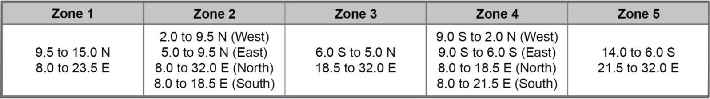
Figure 16:Répartition des zones climatique dans le Bassin du Congo
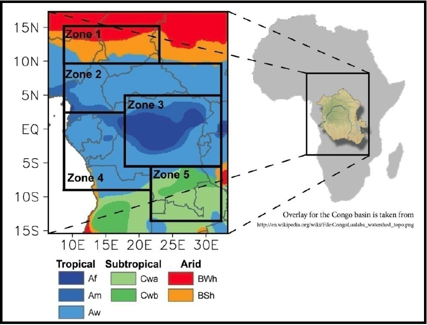
Source : Haensler et al., 2013
Les couleurs dans la carte mettent en évidence les différents climats qu’on trouve dans cette région allant des types de climat tropical au centre aux régions arides même le long des marges septentrionales. La classification est basée sur la classification climatique de Koeppen-Geiger.
La Troisième Communication Nationale (MECNT, 2014) montre que les impacts du changement climatique sur L’évapotranspiration actuelle et l’évapotranspiration potentielle, simulées à l’horizon 2046-2065 grâce au modèle hydrologique PITMAN pour la station de référence Bukama, montrent une augmentation de l’ordre de 10 à 15 % en comparaison à la période historique de référence. Par ailleurs, l’analyse des tendances futures des pluies à différent intervalle de temps (interannuelle et décennale) montre qu’il y a une légère différence entre les moyennes annuelles aux horizons 2046-2065 et 2081-2100, ce qui refléterait les tendances de la variabilité de la période historique de référence. Cependant, il y a lieu de noter une perturbation importante de la distribution saisonnière des pluies aux horizons 2046-2065 et 2081-2100. Ce changement dans la distribution des caractéristiques des pluies associées à l’augmentation des températures entrainera la recrudescence des phénomènes hydrologiques extrêmes, tels que les inondations et sécheresses, l’érosion ravinante des sols et des glissements de terrain, et la perturbation des services rendus par les écosystèmes aquatiques ; à savoir : fournir l’eau domestique, hydroélectricité, irrigation, navigation, etc.
Quant aux scenarios d’élévation du niveau de la Mer, dans son analyse de la série temporelle de la hauteur du niveau de la mer sur la zone côtière de janvier 1993 à décembre 2012, Longandjo34 montre une tendance à l’élévation du niveau de la mer d’environ 2,2 mm par an, soit une élévation d’environ 4,00 cm sur deux décennies
6.2. Priorités d'adaptation et de résilience
La RDC a élaboré un Programme d’Action National d’Adaptation aux Changements Climatiques (PANA) en 2006. Ce programme évalue les risques et la vulnérabilité aux impacts des changements climatiques au niveau national et identifie les activités d’adaptation urgentes et immédiates qui répondent aux effets néfastes actuels et anticipés des changements climatiques, y compris les événements extrêmes. Les principaux secteurs identifiés concernent les ressources en eau, la foresterie, l’agriculture et la zone côtière. Le processus d’identification des axes d’intervention urgente et immédiate a permis de sélectionner dix options prioritaires d’adaptation ci-après :
-
l’électrification des milieux urbains et ruraux ;
-
le captage et forage des puits d’eau ;
-
l’aménagement des réservoirs d’eau ;
-
la lutte contre les érosions et les inondations ;
-
la gestion rationnelle des ressources forestières ;
-
la protection des zones côtières ;
-
la construction et la réhabilitation des voies de communication (routes, voies ferrées et fluviales)
-
la sédentarisation en milieu rural ;
-
le renforcement de la capacité des productions agricoles ; et
-
le renforcement des capacités des services météorologiques nationaux.
La RDC a déjà déployé plusieurs efforts pour mettre en œuvre des actions urgentes d’adaptation dans les secteurs de l’agriculture, du relèvement communautaire et de la lutte contre l’érosion côtière, notamment dans le cadre de certains projets d’adaptation mis en œuvre conformément aux axes d’intervention identifiés dans le PANA. Depuis 2014, un processus d’actualisation des orientations du PANA et d’intégration de la problématique d’adaptation dans les politiques et stratégies sectorielles, suivant une approche participative et pluridisciplinaire, a été initié dans le cadre du Plan National d’Adaptation aux changements climatiques (PNA).
Alors que le PANA visait à identifier les actions urgentes et prioritaires en matière d’adaptation aux changements climatiques, dans le cadre du PNA, il s’agit d’intégrer la dimension adaptation dans la planification du développement national et provincial en considérant les secteurs prioritaires suivants :
-
Conservation des écosystèmes forestiers et de la biodiversité́
-
Renforcement de la résilience du secteur agricole
-
Gestion des risques climatiques dans l’agriculture paysanne
-
Réduction des risques des catastrophes et protection des zones côtières
-
Renforcement de la résilience du secteur de la santé
6.2.1. Conservation des écosystèmes foresters et de la biodiversité́
L’adaptation de la gestion forestière aux changements climatiques permettra de garantir l'offre énergétique et les moyens de subsistance. Des mesures de conservation devraient être mises en place dans les sites spécifiques où les écosystèmes présentent des risques de dégradation. Certaines actions pourront être entreprises, notamment :
-
Inventaire et suivi plus efficaces des forêts en tenant comptes des capacités présentes. Différents systèmes de suivi ont déjà̀ été mis au point. Ils peuvent, toutefois, faire l'objet d'améliorations, en tenant compte des impacts potentiels des changements climatiques ;
-
Mesures de conservation devraient être mises en place dans les sites spécifiques où les écosystèmes présentent des risques de dégradation ;
-
Implication des Communautés Locales et Peuples Autochtones dans les négociations des clauses sociales avec les exploitants forestiers et miniers ;
-
Sensibilisation des différents acteurs concernés par l’exploitation forestière sur les violences et les droits humains des hommes et des femmes ;
-
Initiation des projets Pilotes sur les filières des produits forestiers non ligneux (PFNL) avec les Communautés Locales et Peuples Autochtones ;
-
Reboisement et domestication des espèces à grande valeur écologique, économique et culturelle, etc.
6.2.2. Renforcement de la résilience du secteur agricole
Des actions spécifiques suivantes sont envisagées pour renforcer la résilience du secteur agricole face aux effets des changements climatiques :
-
Réalisation d’un zonage pour une affectation des terres, en vue de circonscrire les zones à affecter spécifiquement aux activités agricoles ;
-
Promotion des bonnes pratiques culturales durables, distribution aux paysans des semences améliorées et résilientes et vulgarisation des techniques d’enrichissement du sol ;
-
Appui à l’organisation des circuits de commercialisation et à une politique des prix des ventes de produits agricoles rémunérateurs aux producteurs ;
-
Encadrement et soutien des paysans dans leurs activités agricoles ;
-
Renforcement de la vulgarisation agricole ;
-
Promotion de la recherche agronomique ;
-
Développement d'outils et procédures de gestion des situations de crises climatiques agricoles ;
-
Multiplication des stations d’observation météorologiques ;
-
Implication de l'Etat, au titre de solidarité́ nationale, en cas d'accidents climatiques exceptionnels, pour assurer l'indemnisation des risques ;
-
Subvention des petits producteurs paysans, de plus en plus vulnérables, en vue d’adopter les nouvelles pratiques agro écologiques à même de pérenniser leurs exploitations ;
-
Sélection de variétés résilientes au niveau des centres des recherches agronomiques et des universités ;
-
Promotion des filières agricoles durables ;
-
Constitution des réserves stratégiques des produits alimentaires ; développement et diffusion des produits de la recherche ;
-
Structuration des organisations paysannes et amélioration de la gouvernance agricole ;
-
Intégration de l’approche genre ;
-
Renforcement des capacités humaines et institutionnelles ;
-
Renforcement des capacités des organisations paysannes.
-
Multiplication des stations d’observation météorologiques ;
-
Etablissement d’un calendrier agricole dynamique pour chaque culture avec l’implication des agro-météorologistes et des agronomes.
-
Le renforcement des efforts individuels et collectifs de prévention au niveau de la recherche agronomique et technologique, de la mise en cohérence des soutiens publics aux investissements de prévention, de développement d'outils et de procédures de gestion des situations de crises climatiques agricoles ;
-
Le développement de capacité́ à mutualiser les risques, dans le temps et dans l'espace, avec un grand nombre possible d'exploitations agricoles PA et autres adhérées à la mutuelle ;
6.2.3. Gestion des risques climatiques dans l’agriculture paysanne
-
Mise en place des solutions d’alerte précoce par : (i) l’amélioration de l'accès des populations aux dispositifs d'alerte rapide multirisques et aux informations et évaluations relatives aux risques de catastrophe ; (ii) l’établissement des partenariats autour des services météorologiques relatifs aux besoins en alerte précoce des femmes rurales et à la sécheresse ; (iii) l’identification des solutions de prévention face aux glissements de terres agricoles ; et (iv) l’élaboration des schémas d’intervention pour la mise en œuvre du système d’alerte précoce pour les femmes en agriculture vivrière.
-
Mise en place des solutions de riposte par l’aménagement hydroagricole et la schématisation des programmes de mise en œuvre des technologies de maîtrise de l’eau agricole ;
-
Renforcement de capacités des vulgarisateurs, tout en tenant compte du genre, dans les stations radio-rurales pour les alertes de risques climatiques ;
-
Usage de l’agro-météorologie pour prévenir les risques climatiques.
-
Subvention des petits producteurs paysans, de plus en plus vulnérables, en vue d’adopter les nouvelles pratiques agroécologiques à même de pérenniser leurs exploitations.
6.2.4. Réduction des risques des catastrophes et protection des zones côtières
-
Analyse, évaluation et cartographie des risques hydro-climatiques ;
-
Evaluation des vulnérabilités et des capacités ;
-
Surveillance et alerte précoce en matière des risques hydro-climatiques (inondations, sécheresse, érosion des sols (urbains et agricoles), glissements de terrain, etc.) ;
-
Elaboration des documents d’informations et de communication des risques climatiques et leur diffusion.
-
Renforcement des capacités institutionnelles et réglementaires de gestion intégrée des zones littorales vulnérables ;
-
Mise en œuvre des mesures de lutte contre l’érosion côtière dans la zone située entre Banana et Nsiamfumu (26 km) ;
-
Appui aux activités résilientes génératrices de revenu et renforcement du système d’alerte précoce des zones littorales vulnérables au changement climatique.
6.2.5. Gestion des ressources en eau et assainissement du milieu
-
Dragages supplémentaires ou élargissements, de sorte que le surplus d'eau s'écoule librement.
-
Adoption des techniques de stabilisation du fleuve dans les zones à risques
-
Amélioration de la prévention des événements météorologiques extrêmes et des inondations (par exemple) à travers des systèmes d’alerte précoces et renforcement de la résilience des ressources en eau à travers les innovations et les modifications des pratiques des ressources d’eau (construction des structures d’approvisionnement en eau dans les villages : puits, réhabilitation des sources, déviation des rivières, etc.).
-
Amélioration de l’accès à l’eau salubre, à l’assainissement et à l’hygiène en milieu rural et péri-urbain ;
-
Appui au programme Ecole et Village Assainis (EVA), établi à l’échelle nationale en développant une stratégie centrée autour de la communauté et de ses besoins et qui donne aux familles l’opportunité de faire des choix informés tout en renforçant leur résilience.
6.2.6. Renforcement de la résilience du secteur de la santé
Amélioration de l’accès aux services de santé publique des populations pauvres vulnérables aux changements climatiques par : (i) l’amélioration, la construction, la réhabilitation et entretien des infrastructures et équipements de santé ; (ii) l’amélioration de l’accès des populations aux services de santé de base afin de réduire les risques.
6.4. Plan de mise en œuvre des mesures d’adaptation
Le tableau 7 présente la synthèse des interventions que la RDC compte mettre en œuvre pour pouvoir atteindre ses objectifs prioritaires d’adaptation aux impacts des changements climatiques à l’horizon 2030. Les principaux secteurs identifiés concernent les ressources en eau, la foresterie, l’agriculture et la zone côtière.
Tableau 8: Synthèse des interventions dans le domaine d’adaptation et leurs coûts estimatifs
|
Secteur |
Objectif |
Actions |
Indicateurs |
Co-bénéfices d'atténuation |
Coût estimatif (Milliards USD) |
Période de mise en œuvre |
Alignement avec les ODD |
|
Forêt |
Gérer de manière durable les écosystèmes forestiers et la biodiversité́ |
Développement des projets de valorisation des ressources forestières (PFNL, foresterie communautaire etc.) avec les Communautés Locales et Peuples Autochtones en veillant sur l’application des dispositions légales |
Nombre de projets mis en œuvre |
-Création d’emplois -Protection des écosystèmes |
1,15 |
2021-2026 |
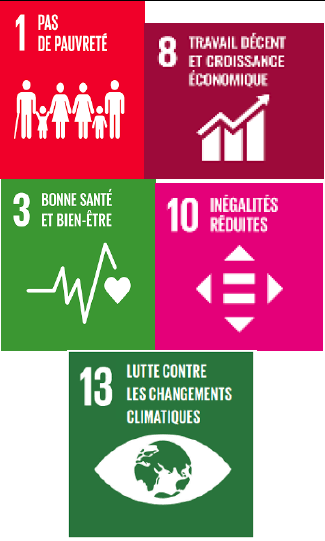 |
|
Reboisement des zones dégradées avec des espèces à grande valeur écologique, économique et culturelle pour les communautés |
Superficie reboisée |
Restauration des écosystèmes dégradés |
1,61 |
2021-2026 |
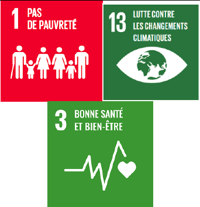 |
||
|
Développement des plantations agroforestières dans les zones dégradées |
Superficie des zones occupées par les plantations agroforestières |
Restauration des terres dégradées |
0,58 |
2021-2026 |
|||
|
Accompagnement et soutien des microprojets de la pêche durable et de la pisciculture |
Nombre de microprojets mis en œuvre |
-Création d’emplois -Amélioration de la sécurité alimentaire et nutritionnelle |
0,23 |
2021-2030 |
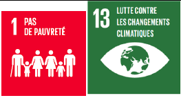 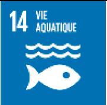 |
||
|
Promotion des projets permettant de réorienter les populations vers des activités économiques à impact réduit sur les écosystèmes forestiers |
Nombre de projets mis en œuvre |
-Création d’emplois -Protection des écosystèmes |
0,06 |
2021-2030 |
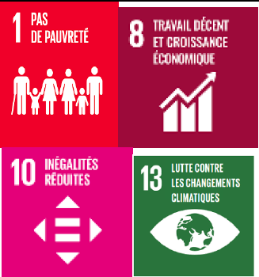 |
||
|
Implication des populations locales dans la gestion des écosystèmes forestiers de leur terroir |
Nombre de personnes impliquées |
- Protection des écosystèmes |
0,06 |
2021-2030 |
|||
|
Valorisation des savoirs traditionnels des populations locales liés à la conservation des écosystèmes |
Type de savoir capitalisé |
-Protection des écosystèmes |
0,06 |
2021-2030 |
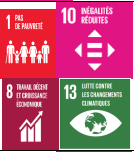 |
||
|
Coordination stratégique des programmes, plans, initiatives en matière d’adaptation aux changements climatiques |
Existence d’une structure de coordination |
-Gouvernace renforcée |
0,06 |
2021-2030 |
|||
|
Promotion de la gestion durable des terres (GDT) |
8 M d’ha à restaurer et à gérer durablement |
Restauration des terres agricoles, sylvicoles |
0,50 |
2021-2030 |
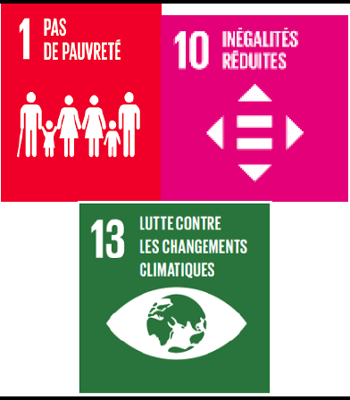 |
||
|
Agriculture |
Renforcer de la résilience du secteur agricole |
Intégration des préoccupations de la lutte contre les changements climatiques dans la planification et la budgétisation du secteur à toutes les échelles (national, provincial et local) |
Nombre de plans de développement prenant en compte l’intégration de l’adaptation aux changements climatiques |
Optimisation de l’utilisation des ressources naturelles et régulation des cycles de carbone et d’azote à travers une production agricole durable |
1,27 |
2021-2030 |
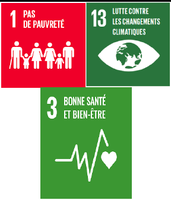 |
|
Production et diffusion des semences résilientes aux effets des changements climatiques |
-Nombre de semences résilientes aux effets des changements climatiques adoptés |
-Innovation et productivité agricole |
0,92 |
2021-2030 |
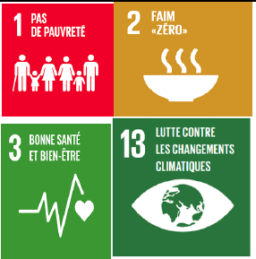 |
||
|
Développement du programme de zonage en vue de circonscrire les zones à affecter spécifiquement aux activités agricoles |
Superficie des zones à affecter spécifiquement aux activités agricoles |
Optimisation de l’utilisation des ressources naturelles |
0,58 |
2021-2030 |
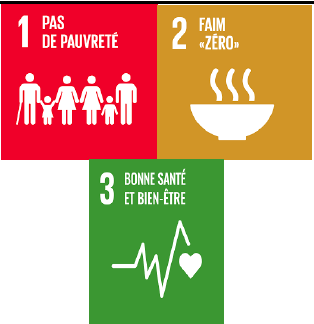 |
||
|
Collecte et traitement des données climatiques par l’INERA et le METTELSAT et diffusion régulière des bulletins météorologiques et de prévision saisonnière |
Nombre de bulletins météorologiqu es et de prévision saisonnière publiés |
|
0,23 |
2021-2030 |
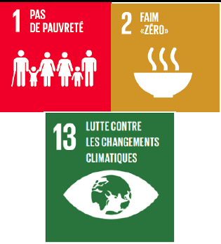 |
||
|
Vulgarisation des techniques de gestion des sol et de l’eau dans l’agriculture |
-Nombre de personnes touchées -Taux de rendement par spéculation |
Gestion durable/restaur ation des sols dégradés |
0,69 |
2021-2030 |
|||
|
Appui à la structuration des organisations paysannes et la gouvernance agricole |
Pourcentage de la population ciblée, ventilé par sexe, âge et province |
Gouvernace agricole renforcée |
0,29 |
2021-2026 |
|||
|
Appui à l’organisation des circuits de commercialisation et une politique des prix des ventes de produits agricoles rémunérateurs aux producteurs agricoles |
Pourcentage de la population ciblée |
Gouvernace agricole renforcée |
0,17 |
2021-2026 |
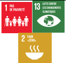 |
||
|
Création et réhabilitation des pistes de dessertes agricoles |
Nombre de kilomètres de pistes de dessertes agricoles crées et réhabilitées |
Distribution et usages des ressources efficaces |
0,69 |
2021-2030 |
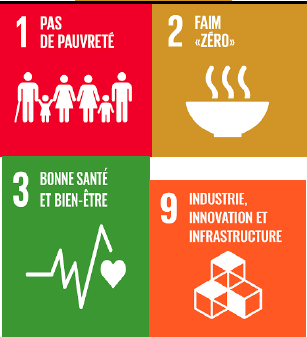 |
||
|
Promotion (i) des pratiques culturales permettant une sédentarisation des activités agricoles, (ii) des semences améliorées et/ou résilientes, et (iii) des techniques de gestion des sols et de l’eau dans l’agriculture accessibles aux paysans |
-Nombre de pratiques culturales -Nombre de semences améliorées et/ou résilientes |
- Innovation et productivité |
0,23 |
2021-2030 |
|||
|
Développement et dissémination des stations d’observation météorologiques à travers le pays |
Nombre de stations d’observation météorologiqu es installées |
Gouvernace agricole renforcée |
0,17 |
2021-2030 |
|||
|
Renforcement les capacités et autonomisation des femmes |
Nombre de femmes ayant bénéficié du renforcement des capacités |
Capacités humaines et institutionnelle s renforcées |
0,23 |
2021-2030 |
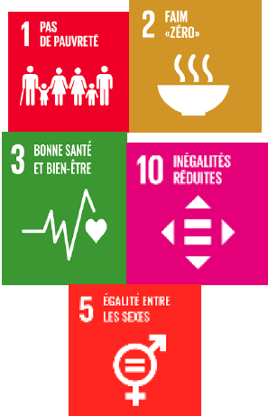 |
||
|
Développement des énergies alternatives au bois énergie en vue de protégé la forêt (solaire, gaz, ou au moins foyers améliorés, etc) |
Nombre de types d’énergies alternatives au bois énergie développés |
Protection des écosystèmes |
0,17 |
2021-2030 |
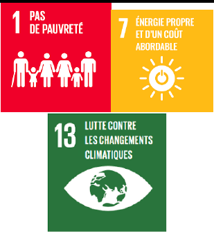 |
||
|
Renforcement des capacités d’adaptation et de gestion des impacts des changements climatiques sur la production agricole et la sécurité alimentaire |
Nombre de ménages ayant bénéficié du renforcement des capacités |
Capacités humaines et institutionnelle s renforcées |
0,06 |
2021-2030 |
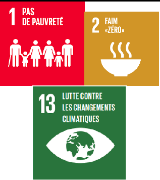 |
||
|
Appui à la recherche et à l’innovation pour renforcer la résilience du secteur agricole face aux effets néfastes des changements climatiques |
Nombre et type d’appuis apportés à la recherche et l’innovation |
Innovation et productivité |
0,23 |
2021-2030 |
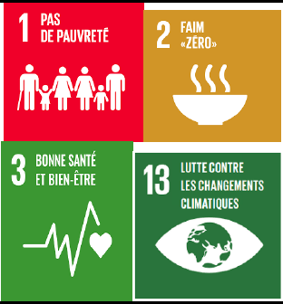 |
||
|
Création des Pôles d’Entreprises Agricoles (PEA) et promotion de l’agro- business |
Nombre d’entreprises créées |
Création d’emplois |
0,46 |
2021-2030 |
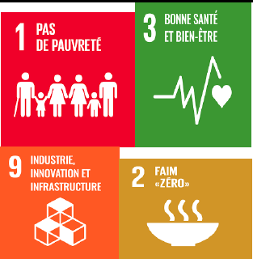 |
||
|
Assurer la gestion des risques climatiques dans l’agriculture paysanne |
Mise en place des systèmes d’alerte précoce |
Nombre de schémas d’intervention pour la mise en œuvre du système d’alerte précoce pour les femmes en agriculture vivrière élaborés |
Innovation et productivité |
0,58 |
2021-2030 |
||
|
Mise en place des mesures de riposte en cas de catastrophes naturelles |
-Nombre d’aménagemen ts hydro- agricoles réalisés - Nombre de programmes de conservation d’eaux et de terres (lutte anti-érosive) développés |
Innovation et productivité |
2,88 |
2021-2030 |
|||
|
Développement de mécanismes de subventions des petits producteurs paysans, de plus en plus vulnérables, en vue d’adopter les nouvelles pratiques agro écologiques à même de pérenniser leurs exploitations |
Nombre de petits producteurs paysans ayant bénéficié des subventions |
Création d’emplois Distribution et usages des ressources efficaces |
0,23 |
2021-2030 |
|||
|
Zone côtière |
Réduire les risques des catastrophes et protéger les zones côtières |
Evaluation des vulnérabilités et des besoins en capacités humaines et institutionnelles |
Nombre d’études réalisées sur les vulnérabilités et les besoins en capacités humaines et institutionnelles |
Capacités humaines et institutionnelle s renforcées |
0,58 |
2021-2026 |
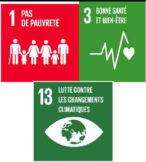 |
|
Renforcement de système d'alerte précoce des zones littorales vulnérables et des zones des risques hydro- climatiques (inondations, sécheresse, érosion des sols (urbains et agricoles), glissements de terrain, éruption volcanique, etc.) |
Nombre de dispositifs d'alerte précoce des zones littorales vulnérables et des zones des risques hydro- climatiques installés |
Innovation et productivité |
0,29 |
2021-2030 |
|||
|
Mise en œuvre des mesures de lutte contre l'érosion côtière dans les zones littorales vulnérables, notamment la zone située entre Banana et Nsiamfumu (26 km) |
Nombre de mesures de lutte contre l'érosion côtière dans les zones littorales mises en place entre Banana et Nsiamfumu (26 km) |
Préservation des espaces naturels |
0,35 |
2021-2030 |
|||
|
Protection des zones érosives par le recours aux techniques de lutte antiérosive adaptées |
Superficie des zones érosives protées par le recours aux techniques de lutte antiérosive adaptées |
Préservation des espaces naturels |
0,16 |
2021-2030 |
|||
|
Appui aux activités résilientes génératrices de revenus des ménages |
Nombre de personnes /mé nages ayant reçu des appuis pour les AGR |
-Création d’emplois -Protection des écosystèmes |
0,75 |
2021-2030 |
|||
|
Éducation, Information et sensibilisation sur les catastrophes et les risques climatiques. |
Nombre de plan de communicatio n mis en œuvre |
Optimisation de l’utilisation des ressources naturelles |
0,23 |
2021-2030 |
|||
|
Ressources en eau |
Gérer les ressources en eau de manière durable et assainir le milieu |
Elaboration de la stratégie et la loi sur l’assainissement |
Nombre de lois élaborées sur l’assainisseme nt |
Gouvernace climatique renforcée |
0,01 |
2021-2026 |
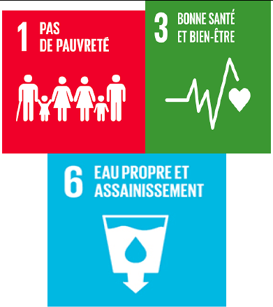 |
|
Elaboration des schémas d’aménagement et de gestion des ressources en eau par bassin ou sous bassin |
Nombre de schémas d’aménagemen t et de gestion des eaux par bassin ou sous bassin |
Gouvernace climatique renforcée |
0,35 |
2021-2026 |
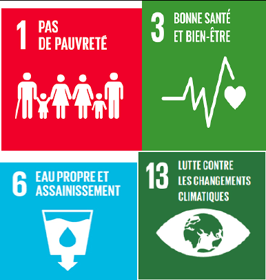 |
||
|
Création/Réhabilitation des structures d’approvisionnement en eau dans les villages |
Nombre de structures d’approvisionn ement en eau installées |
Gouvernace climatique renforcée |
0,92 |
2021-2030 |
|||
|
Promotion des techniques de stabilisation du fleuve dans les zones à risques |
Nombre de zones à risques du fleuve stabilisées |
Innovation |
0,46 |
2021-2030 |
|||
|
Renforcement de la résilience des populations vulnérables (femmes et enfants) par un appui au programme Ecole et Village Assainis |
Nombre de programme Ecole et Village Assainis mis en œuvre |
Sécurité alimentaire et nutritionnelle renforcée |
0,35 |
2021-2030 |
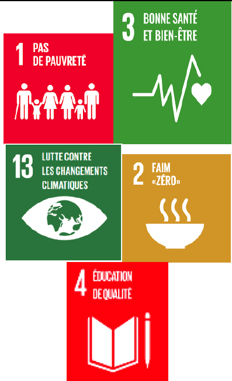 |
||
|
Promotion des approches pro-pauvres pour la mise en place des infrastructures et des services d’assainissement |
Nombre d’infrastructur es et des services d’assainissement installés dans le cadre des approches pro-pauvres |
Protection des écosystèmes |
0,22 |
2021-2030 |
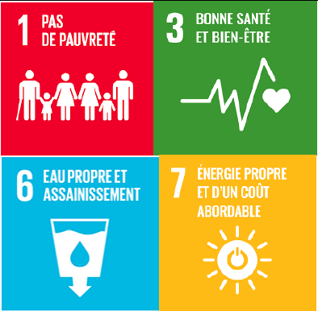 |
||
|
Production, gestion et diffusion de l’information sur les ressources en eau et les aménagements hydrauliques/agro- hydrauliques |
Nombre de plan de communicatio n mis en œuvre |
Gouvernace climatique renforcée |
0,06 |
2021-2030 |
|||
|
Amélioration de l'accès à l'eau potable |
Nombre de ménages ayant accès à l’eau potable (milieu rural, milieu urbain) |
Amélioration de l’habitat |
0,23 |
2021-2030 |
|||
|
Amélioration de l'accès aux services de gestion durables des déchets et à l'assainissement des eaux usées |
Nombre de ménages ayant accès aux services d’assainissement |
Amélioration de l’habitat |
0,20 |
2021-2030 |
|||
|
Amélioration à l'accès à la communication (voiries et TIC) et désenclavement des zones rurales vulnérables |
Nombre de ménages ayant accès à l’information |
Amélioration de la qualité de vie |
0,32 |
2021-2030 |
|||
|
Santé |
Faciliter l’accès aux services de santé et améliorer la qualité de la vie |
Construction/réhabilitation et équipement des établissements de santé |
Nombre d’établissemen ts de santé construits, réhabilités ou équipés |
Amélioration de la santé |
0,92 |
2021-2030 |
|
|
Renforcement des capacités humaines et institutionnelles et facilitation de l’accès des populations vulnérables aux services de santé de base |
Nombre de personnes ayant accès aux services de santé de base |
Amélioration de la santé |
0,88 |
2021-2030 |
|||
|
Promotion de l’intégration de l’approche genre/Jeunesse/groupes vulnérables dans la lutte contre les changements climatiques |
Nombre de personnes et d’institutions formés |
Capacités humaines et institutionnelle s renforcées |
0,23 |
2021-2030 |
|||
|
Intégration des impacts potentiels des changements climatiques sur la santé publique dans les politiques et plans de développement |
Nombre de plans ou programmes |
Gouvernance climatique renforcée |
0,06 |
2021-2030 |
|||
|
Développement des synergies avec d’autres initiatives sur les plans de la santé publique |
Types de synergie créés Nombre et qualité d’acteurs engagés |
Gouvernance climatique renforcée |
0,06 |
2021-2030 |
|||
|
Energie |
Faciliter l’accès des ménages à une énergie propre et à un coût abordable |
Promotion de mode de production alternative d'énergie (installation des systèmes solaire, éolien, biomasse), |
Nombre de ménages ayant accès aux énergies alternatives |
Protection des écosystèmes |
0,40 |
2021-2030 |
|
|
Amélioration des techniques de modélisation du climat à l’échelle locale pour mieux prévoir les impacts futurs |
Scenario climatique identifié |
Protection des écosystèmes |
0,23 |
2021-2030 |
|||
|
Aménagement des bassins de rétention d'eau, construction des digues de protection des infrastructures de production |
Nombre de bassins versants aménagés |
Protection des écosystèmes |
0,35 |
2021-2030 |
|||
|
Promotion de l'usage rationnel de l'énergie électrique, amélioration de la gestion du système de réseaux de distribution énergétique |
Nombre de ménages ayant accès à l’énergie électrique |
Protection des écosystèmes |
0,17 |
2021-2030 |
|||
|
TOTAL |
23,08 |
7. Cadre de Mesure, Notification et vérification (MNV)
Le nouveau cadre de transparence amélioré exige que le système MNV de la CDN rende compte de façon transparente des progrès réalisés vers les objectifs définis dans la CDN de la RDC et de suivre les progrès réalisés dans la mise en œuvre des actions d'atténuation et d'adaptation - ainsi que l'utilisation et les résultats des moyens de mise en œuvre et de soutien, y compris le renforcement des capacités, le transfert de technologie et le financement. Le système MNV prend également en compte les impacts non-GES sur les impacts environnementaux, sociaux et économiques des actions de la CDN qui conduiraient à un changement transformationnel vers la réalisation des objectifs nationaux de développement durable. Dans le cas de la RDC, cela doit prendre en compte l'intégration de la dimension genre et de la jeunesse qui sont au cœur du Plan National de Développement Stratégique (PNSD) du pays.
Ces exigences nationales et internationales pour les trois dimensions de MNV se chevauchent et il est utile de démontrer leurs liens au sein du système national MNV. Par exemple, le financement, le renforcement des capacités et le soutien technique ont un impact direct sur la mise en œuvre des actions d'atténuation et d'adaptation. Par conséquent, le système national MNV de la CDN de la RDC sera utile pour suivre et rendre compte des progrès et de l'utilisation du soutien, ainsi que pour faciliter l'identification des défis afin d'informer les changements de politique essentiels pour améliorer la mise en œuvre.
En RDC, le mandat de coordination et de suivi de la mise en œuvre harmonieuse de l’action environnementale en général, de l’action climatique en particulier est confié au Ministère de l’environnement et développement durable (MEDD). Le MEDD, à travers la Direction de Développement Durable (DDD), assure la coordination de l’ensemble de la dynamique de la mise en œuvre et de suivi de toutes les questions relatives aux changements climatiques. Il est le point focal de la convention-cadre des Nations Unies sur les changements climatiques (CCNUCC). A ce titre, la DDD assure la préparation et la production des rapports nationaux d’inventaires des gaz à effet de serre (GES) et ce, en collaboration avec les différentes institutions nationales (le ministère des finances, de l'intérieur, de l'agriculture, transport, des travaux publics et infrastructures, Industrie, de commerce, de développement rural, de l’aménagement du territoire, de la recherche scientifique, du plan, du Budget, de la santé publique, de l’élevage, hydrocarbures, économie, Mines ; hydraulique et électricité, genre, des universités) et autres organisations, tant au niveau national qu’international. Le Ministère de l'environnement et Développement Durable impulse également l’intégration des politiques et stratégies environnementales et les questions de changement climatique dans les plans de développement nationaux.
Sous le leadership du Ministère de l’Environnement et Développement Durable, un Comité National sur les Changements Climatiques est institué. Il rassemble les délégués des différentes Administrations et institutions publiques, des universités, centres de recherches, des organisations nationales et de la Société Civile en vue de partager une vision et compréhension commune dans la mise en œuvre des projets susceptible d’assurer l’avancement des interventions, initiatives et activités dans le domaine des changements climatiques dans une ambiance harmonieuse et collaborative.
Un Comité Technique de Coordination et de Groupes thématiques de travail sont mis en place pour la réalisation des différentes activités, études et rapports. Le Comité Technique de Coordination se veut un organe de concertation et un espace de dialogue, d’échanges et d’orientation entre les parties prenantes pour la mise en œuvre de la CDN. Il rassemble les délégués des différentes administrations publiques, institutions et organisations en vue de partager une vision et compréhension commune dans la mise en œuvre des projets susceptible d’assurer l’avancement des interventions, initiatives et activités dans le domaine des changements climatiques dans une ambiance harmonieuse et collaborative.
Les fonctions du Comité Technique de Coordination sont déterminées comme suit : (i) S’assurer du développement de la CDN en un seul processus national rationalisé sous la responsabilité technique du MEDD ; (ii) Faciliter la coordination avec les autorités compétentes tant au niveau national, provincial que local ; (iii) Définir les orientations et les directives du processus CDN et décider des actions à mener (iv) Statuer globalement sur l'état d'avancement des activités des différents projets et initiatives connexes à la CDN ; (v) Revoir et échanger les points de vue sur des questions majeures relatives à la mise en œuvre des projets susmentionnés, ainsi que proposer des mesures correctives ; et (vi) Assurer le suivi et l’évaluation de la mise œuvre du processus CDN.
La DDD assure l’ensemble de la notification et de la communication au Comité Technique de Coordination et au Gouvernement, à travers le MEDD, afin d'informer les politiques et les décisions stratégiques qui garantissent que le MNV de la CDN soutient efficacement le développement durable du pays conformément à son Plan National de Développement Stratégique (PNSD).
Les points suivants sont des domaines clés qui font partie du mandat du Comité :
-
Examiner et établir les objectifs du comité, le mandat, la composition et les modalités générales de travail du comité dont le principal est l'approbation et le rapport ultérieur de MNV de la CDN aux niveaux national et mondial ;
-
Fournir des conseils et un retour d'information sur la portée, le calendrier, les coûts et les préoccupations de qualité, ou des orientations sur les priorités du programme, qui surviennent au cours de la planification, de la conception et de la mise en œuvre des projets liés à la CDN ;
-
Faciliter l'accès aux ressources nécessaires pour examiner et rendre compte de MNV de la CDN et approuver les projets aux étapes clés ;
-
Réviser et examiner les études, les activités de recherche en ligne avec la CDN pour faciliter l'assurance qualité et l'alignement avec les priorités stratégiques ;
-
Développer et rendre opérationnel un plan de communication efficace sur le MNV de la CDN.
La figure 8 ci-dessous résume les dispositions institutionnelles pour le suivi de la mise en œuvre des CDN, y compris le processus MNV national des CDN.
Figure 17: Dispositions institutionnelles pour le suivi de la mise en œuvre des CDN
Le tableau 12 suivant présente une liste des acteurs pertinents qui seront impliqués dans la préparation et la mise en œuvre ultérieure de la CDN, conformément à leur rôle ou responsabilité nationale et leur rôle dans le processus de la mise en œuvre de la CDN.
En outre, au cours de la phase de préparation de la mise en œuvre de la CDN, il sera possible de considérer la participation d'autres institutions spécialisées telles que l’Institut National d’Etudes et Recherches Agronomiques (INERA), l’Agence Nationale de Météorologie et Télédétection par Satellite (METTELSAT), le Service National de Statistiques Agricoles (SNSA), l’Observatoire National de l’Aménagement du Territoire (ONAT), etc.
7.2 Gestion des données et des informations du MNV de la CDN
Le système de suivi et d'évaluation axé sur les résultats sera le principal référentiel et, par conséquent, la plateforme appropriée pour le suivi et la gestion des informations et des données pour le secteur de l'environnement et des ressources naturelles, présidé par le MEDD. Ainsi, toutes les données relatives au changement climatique, y compris le MNV de la CDN géré et rapporté par le comité technique de travail MNV de la CDN, seront traitées et accessibles par le système de suivi et d'évaluation axé sur les résultats. L'évaluation et la définition des sources de données les plus adaptées seront importantes pour que tout système MNV soit efficace.
Le comité technique de travail pour le MNV de la CDN qui sera mis en place jouera un rôle essentiel dans la production et le rapportage des données et des informations au niveau national et de rapports et sera impliqué de manière significative dans la collecte de données, la transparence et la vérification. Le comité s'assurera que le système MNV de la RDC relie l'atténuation, l'adaptation et le financement, ainsi que le soutien au renforcement des capacités et le transfert de technologie en tant qu'aspects critiques de la mise en œuvre de la CDN.
Les données primaires seront généralement collectées au niveau provincial et les secteurs/institutions auront des liens directs avec les niveaux provinciaux pour obtenir des données et des informations spécifiques au secteur/à l'action prioritaire, y compris le MNV de la CDN.
Ceci sera fait avec le soutien des parties prenantes au niveau provincial, une opportunité pour l'engagement des ONG, du secteur privé et des partenaires du développement pour fournir des contributions au processus MNV de la CDN. Le ministère de l’environnement et développement durable (MEDD) assurera la supervision et la coordination en facilitant les flux de gestion des données des gouvernements provinciaux vers les institutions du niveau central. La Division Changements Climatiques au sein de la Direction de Développement Durable du MEDD est le point focal technique pour la collecte, le traitement, la saisie et l'analyse des données liées au MNV de la CDN.
L'Institut national des statistiques (INS) de la RDC sera au cœur des processus de production de données nationales et aura le rôle ultime de valider les statistiques nationales par l'authentification des données et de l'information, et donc l'approbation des statistiques nationales partagées avec différents utilisateurs. L'Institut national de la statistique (INS) facilitera l'élaboration et l'application de protocoles de collecte données et révisera annuellement les normes et les lignes directrices nationales pour l'entrée et l'agrégation des données afin d'orienter les données et l'information sur l'atténuation et l'adaptation produites par les secteurs.
Tableau 9: liste des acteurs pertinents pour la mise en œuvre de la CDN
|
Parties prenantes |
Responsabilité/rôle |
Rôle dans la mise en œuvre de la CDN |
|
Ministère de l'Environnement et du Développement durable (MEDD) |
Le MEDD dirige et est le principal coordinateur national des activités liées à l'environnement et aux changements climatiques en RDC au nom du gouvernement. Il est responsable de l'élaboration de rapports nationaux et internationaux (inventaires nationaux de GES, communications nationales sur les changements climatiques, Rapports biennaux de mise à jour (BUR), CDN, plans nationaux sur les changements climatiques, etc.), ainsi que de la gestion des données liées au secteur forestier. Il agit en tant que Point Focal de la CCNUCC, du FEM et du FVC. Responsable du Système national de surveillance des forêts, inventaires forestiers nationaux. Elle constitue une source importante d’informations sur la dynamique forestière en RDC. Elle sera l’une des parties prenantes consultées pour l’échange de connaissances, la collecte de données et la diffusion sur le Niveau de référence des forets en RDC. |
Il coordonnera toutes les activités de préparation et de mise en œuvre des interventions du projet, ainsi que celles liées au suivi, à l'établissement de rapports et à l'amélioration de la transparence. |
|
Ministère en charge de l'Agriculture (MINAGRI) |
Responsable de la conception, formulation, de la coordination, de la promotion, du suivi et de l'évaluation des politiques de développement agricole. Il est en charge de la gestion de toutes les données relatives à l'agriculture publiées dans les annuaires SNSA (production animale et végétale). |
Il sera chargé de coordonner les tâches liées à la collecte et à l'amélioration des données pour le suivi et le reporting des activités agricoles. |
|
Ministère du Développement Rural (MINDER) |
Responsable de l'atteinte de la sécurité alimentaire et de l'amélioration durable et effective des conditions de vie des populations rurales. |
Il coordonnera les activités et la gestion des données liées aux activités rurales et en raison de sa représentation à travers le pays, il donnera des informations opérationnelles et techniques pour tous les aspects du secteur AFAT à différents niveaux. |
|
Ministère de la Pêche et de l'Élevage |
Responsable de la gestion durable des ressources halieutiques et animales et de leur contribution à la sécurité alimentaire et nutritionnelle de la population. Il est en charge de la gestion de toutes les données relatives à l'élevage et à la pêche. |
Il sera chargé de coordonner les tâches liées à la collecte et à l'amélioration des données pour le suivi et la déclaration des activités de pêche et d'élevage. |
|
Ministère de l’Aménagement du Territoire |
Responsable de planification (zonage) de l’utilisation rationnelle des terres |
|
|
Ministère des Affaires foncières |
Responsable de la gestion du régime général des biens, régime foncier et immobilier |
|
|
Ministère en charge de la Plannification (Ministère du Plan) |
Responsable de la production des statistiques nationales et de la gestion de toutes les données liées à la planification nationale et régionale. |
Il veillera au respect des normes statistiques nationales. |
|
Ministère de la Santé |
Mettre en œuvre la politique du Gouvernement dans le domaine de la santé |
|
|
Ministères en charge des affaires étrangères et de la coopération internationale |
Rechercher, négocier et mobiliser des réssources extérieures en faveur du développement national. |
Organiser les réunions des partenaires bi et multilatéraux et de mettre en place un cadre permanent de concertation au niveau national. |
|
Ministères en charge de l’intérieur et des affaires sociales |
Gérer les catastrophes et calamités naturelles |
Coordonner la commission interministérielle sur les catastrophes et calamités naturelles. |
|
Ministère de la recherche scientifique |
Promouvoir la recherche scientifique et le transfert de technologie dans le domaine des changements climatiques |
|
|
INS |
L'Institut national de la statistique (INS) de la RDC est au cœur des processus de données nationales et a le rôle ultime de valider les statistiques nationales par l'authentification des données et de l'information, et donc l'approbation des statistiques nationales partagées avec l'extérieur. |
L'Institut national de la statistique (INS) facilitera l'élaboration et l'application de protocoles de données et révisera annuellement les normes et les lignes directrices nationales pour l'entrée et l'agrégation des données afin d'orienter les données et l'information sur l'atténuation et l'adaptation produites par les secteurs. |
|
Ministère des Finances (Ministère des Finances) |
Responsable de la planification budgétaire nationale; il participe activement à diverses activités liées à la revue des dépenses publiques et à la gestion des finances. |
Il garantira l'effectivité de la contribution financière de la RDC à ce projet. |
|
Ministère du Genre, de la Famille et de l'Enfance |
Il a été créé pour élaborer et coordonner la mise en œuvre des mesures gouvernementales liées à la promotion et au respect des droits des femmes et à la protection de la famille, pour gérer et coordonner les aspects sociaux. Il est chargé d'améliorer le cadre juridique et institutionnel pour assurer la participation des femmes au développement, la représentation des femmes à tous les niveaux et l'intégration du genre dans les politiques et programmes du pays. |
Il soutiendra l'intégration dans le projet d'éléments qui contribuent à combler l'écart entre les sexes dans les activités d'adaptation et d'atténuation du changement climatique, ainsi qu'un accès plus équilibré entre les hommes et les femmes aux ressources nationales. Il soutiendra également l'élaboration de stratégies visant à réduire l'écart entre les sexes dans les activités du projet, en particulier celles liées au renforcement des capacités. |
|
Ministère en charge de l’Energie (Ressources hydrauliques et Electricité), ) |
Responsable de la gestion des statistiques de l’approvisionnement, de production et consommation des ressources énergétiques au niveau national. |
Il sera chargé de coordonner les tâches liées à la collecte et à l'amélioration des données pour le suivi et la déclaration des activités d’approvisionnement, de production et consommation de combustibles. |
|
Ministère en charge des Hydrocarbures |
Responsable de la gestion des statistiques de l’approvisionnement, de production et consommation des hydrocarbures au niveau national |
Il sera chargé de coordonner les tâches liées à la collecte et à l'amélioration des données pour le suivi et la déclaration des activités d’approvisionnement, de production et consommation de combustibles liquides. |
|
Ministère des transports |
Il est en charge de la gestion de toutes les données relatives à la flotte des véhicules (véhicules roulants, aviation, navigation fluviale et lacustres) |
Il sera chargé de coordonner toutes les tâches liées à la collecte et à l'amélioration des données pour le suivi et la notification des activités du secteur transport |
|
Comité National sur les Changements Climatiques |
À l’heure actuelle, les orientations de mise en oeuvre des projets et programmes sont suivi dans le cadre de comités de pilotage distincts |
Partager une vision et compréhension commune dans la mise en œuvre des projets susceptible d’assurer l’avancement des interventions, initiatives et activités dans le domaine des changements climatiques dans une ambiance harmonieuse et collaborative. |
|
Comité technique de coordination et de suivi de la mise en œuvre de la CDN |
Il a un rôle opérationnel et de concertation entre les entités clés des ministères sectoriels et les partenaires techniques impliqués dans les différentes composantes de la CDN. Son rôle est de contribuer à analyser et valider techniquement l'ensemble des données et informations techniques produites dans le cadre de la CDN. |
Le Comité Technique de Coordination se veut un organe de concertation et d’orientation entre les parties prenantes pour la mise en œuvre de la CDN. Il rassemble les délégués des différentes administrations publiques, institutions et organisations en vue de partager une vision et compréhension commune dans la mise en œuvre des projets susceptible d’assurer l’avancement des interventions, initiatives et activités dans le domaine des changements climatiques dans une ambiance harmonieuse et collaborative Il soutiendra les aspects liés à l'information associée à la CDN pour les secteurs Energie, AFAT et Déchets et la réalisation de sa mise en œuvre. |
|
Comité (technique) provincial sur les changements climatiques |
Son rôle est de contribuer à analyser et valider techniquement l'ensemble des données et informations techniques produites au niveau provincial dans le cadre de la CDN. |
Le Comité Technique de Coordination se veut un organe de concertation et d’orientation entre les parties prenantes au niveau provincial. Il rassemble les délégués des différentes administrations publiques rpvinciales, institutions et organisations en vue de partager une vision et compréhension commune dans la mise en œuvre des projets susceptible d’assurer l’avancement des interventions, initiatives et activités dans le domaine des changements climatiques dans une ambiance harmonieuse et collaborative |
|
Universités et centres de recherche |
Ils sont responsables de la recherche, de l'innovation et de la formation formelle dans tous les domaines, y compris ceux liés aux changements climatiques, ainsi que des mesures d'adaptation et d'atténuation. |
Ils fourniront des informations sur le changement climatique, les méthodologies et les approches de surveillance, d'estimation des GES et de suivi des progrès dans la mise en œuvre des CDN. Ils seront invités à participer à des formations, des ateliers et des réunions afin d'avoir un échange efficace de connaissances et de bonnes pratiques. En outre, les universités pourraient soutenir les processus de formation et l'inclusion de ces sujets dans les programmes des diplômes universitaires. Ce partenariat avec des institutions universitaires permettra la diffusion des bases scientifiques sur le besoin de comptabilisation du capital naturel et de législation pour diverses initiatives dans le cadre de ce processus. |
|
Organisations de la société civile |
Ells jouent un rôle important au niveau local pour l'organisation, la sensibilisation, le renforcement des capacités et l'exécution d'actions spécifiques d'adaptation et d'atténuation au changement climatique. Certaines organisations qui seront impliquées dans le projet seront : CEDEN, CODELT, GTCRR, LINAPYCO, Logos Premier, OCEAN, REBAC, REFADD, REPALEF-RDC, RRN, entre autres. |
Elles seront invitées à participer à des activités liées à la mise en œuvre de la politique et de la loi sur les changements climatiques, le renforcement des capacités et la production/collecte de données et d'informations pertinentes pour le fonctionnement du système MRV et les inventaires de GES. |
|
Organisations du secteur privé |
Ils sont un acteur clé dans la réalisation des CDN et la mise en œuvre des activités d'adaptation et d'atténuation du changement climatique, car ils en subissent également les effets. Quelques exemples d'organisations du secteur privé sont la COPEMECO (Confédération des Petites et Moyennes Entreprises), FIB (Fédération des Industriels du Bois), FEC (Fédération des Entreprises du Congo), SAFBOIS et SIFORCO, et les agro-industries. |
Sa participation est requise pour rendre possible la mise en œuvre de la politique et de la loi sur le changement climatique, à la fois pour l'application des mesures d'atténuation et/ou d'adaptation et la réalisation des CDN et pour la fourniture de données et d'informations pour le fonctionnement du MRV et du GES inventaires. |
|
La Banque Centrale de la RD Congo (BCC) |
définir et mettre en œuvre la politique monétaire du pays dont l’objectif principal est d’assurer la stabilité du niveau général des prix. |
|
|
Les services spécialisés (INERA, METELSAT, SNSA, ONAT) |
Caractérisé par une très basse contribution aux émissions globales des GES, une très faible intensité de GES par rapport au Produit Intérieur Brut (PIB), et un indice de développement humain le plus bas selon le rapport sur le développement humain de 2020 (PNUD, 2020), la RDC doit donc faire face à de nombreux défis en termes de développement socio- économique. Par ailleurs, le pays doit en priorité minimiser les risques d’impacts des changements climatiques, en raison de l’importante vulnérabilité de certaines activités économiques, comme l’agriculture et la foresterie.
Cette section donne un aperçu de moyens de mise en œuvre en termes (i) d’arrangements institutionnels ; (ii) de renforcement des capacités, (iii) de transfert des technologies, et (iv) de besoin des financements pertinents susceptibles de faciliter et accélérer la mise en œuvre des mesures d'atténuation et d'adaptation.
8.4. Mécanismes politiques et arrangements institutionnels
La mise en œuvre de la CDN se fera, sous le leadership du Ministère de l’Environnement et Développement Durable (MEDD), en collaboration avec différents ministères sectoriels concernés au niveau local, provincial, national et les autres parties prenantes notamment les jeunes, les femmes et les populations autochtones.
Les résultats des études spécifiques alimenteront régulièrement la politique nationale sur les changements climatiques, et des lois et règlements clés seront promulgués, notamment la loi sur les changements climatiques et la loi sur l’aménagement du territoire. Un texte juridique sera pris, établissant les arrangements institutionnels appropriés afin d’assurer la coordination des actions intersectorielles concernant la lutte contre les changements climatiques.
8.6. Egalité de genre, participation de jeunes et des Peuples Autochtones
L’opérationnalisation de la CDN ne sera possible que dans une approche inclusive, garantissant l’équité de genre, l’égalité des droits entre les femmes et les hommes, les garçons et les filles, intégrant les enfants, les jeunes, les Peuples Autochtones et les autres groupes vulnérables.
Depuis 2009, pour se conformer aux engagements relatifs à la promotion des droits des femmes et de l’égalité de genre auxquels il a souscrit, le Gouvernement s’est doté d’une Politique nationale genre assortie d’un plan d’action. En 2020 un rapport sur l’analyse de la prise en compte du genre dans la planification de l’adaptation aux changements climatiques ainsi qu’un plan de renforcement de la résilience des femmes autochtones face aux effets des changements climatiques.
La RDC dispose aussi d’une Politique de la jeunesse et son Plan stratégique de mise en œuvre.
Récemment, un projet de loi portant principes fondamentaux relatifs aux droits des Peuples Autochtones Pygmées a été adopté à l’Assemblée Nationale.
Des lignes de communication claires seront développées à différents niveaux (local, provincial, national et international) et entre les différents secteurs et parties prenantes, en veillant sur l’égalité de genre, la participation de jeunes et des Peuples Autochtones.
8.8. Renforcement des capacités et transfert de technologies
Dans le cadre de l'Accord de Paris, les pays développés se sont engagés à faciliter le transfert de technologies et renforcement des capacités vers les pays en développement. De nombreux pays en développement ont exprimer leurs besoins en capacités pour soutenir et identifier les lacunes tant au niveau technologique que de l’expertise permettant de s’assurer de suivi de ressources bilatérales et multilatérales.
Il est essentiel que les dispositions de l'Accord de Paris sur le renforcement des capacités soient mises en œuvre avec succès. Le transfert de technologie et le renforcement des capacités seront nécessaires pour mettre pleinement en œuvre Contributions de la RDC à l'atténuation et à l'adaptation. Besoins spécifiques identifiés dans ce cadre comprennent entre autres :
-
L'accès et la levée des barrières à la diffusion de technologies propres appropriées ;
-
Construire des systèmes d'information climatique ;
-
Promotion des énergies renouvelables et de l'efficacité énergétique, y compris l'implication du secteur privé ;
-
Mise en place de partenariats public-privé.
8.9. Engagement du secteur privé.
Les organisations du secteur privé sont des acteurs clés dans la réalisation des interventions de la CDN et dans la mise en œuvre transparente des activités d'adaptation et d'atténuation aux changements climatiques, sans négliger les aspects sociaux et environnementaux. Leur participation est nécessaire pour rendre possible la mise en œuvre de la politique et de la loi sur les changements climatiques, à la fois pour l'application des mesures d'atténuation et la réalisation des interventions de la CDN et pour la fourniture de données et d'informations pour le fonctionnement du système MRV et la réalisation des inventaires nationaux de GES.
Au cours de la phase de préparation de la feuille de route pour la mise en œuvre de la CDN, la participation des organisations du secteur privé sera définie, ainsi que les activités de la CDN
dans lesquelles ces organisations seront impliquées, bien qu'il soit prévisible qu'elles soient liées à la mise en œuvre de la politique et de la loi sur les changements climatiques et des contributions sur les processus de production/collecte de données et d'informations pertinentes pour le système MRV et les inventaires nationaux de GES.
L’implication des acteurs privés sera notamment pertinente en réalisant des projets permettant d’atteindre les objectifs des secteurs énergie et agriculture.
Par ailleurs, la participation des représentants du secteur privé en RDC est actuellement assurée par deux entités : la Fédération des Entreprises Commerciales (FEC) et la Fédération de l'Industrie du Bois (FIB). Cependant, le gouvernement met en œuvre l'identification et la cartographie des représentants supplémentaires des principales parties prenantes, leurs principaux domaines d'intervention et intérêts, afin de définir les incitations décisives qui pourraient leur permettre de mieux et davantage participer à la mise en œuvre de la CDN.
Dans le cadre du processus de révision des CDN, une analyse approfondie et des consultations des différentes parties prenantes et experts sectoriels ont été engagés pour produire des estimations de coûts conditionnelles et inconditionnelles pour les mesures d'atténuation et d'adaptation jusqu'en 2021 et 2030. Le coût total estimé à environ vingt-cinq virgule six (25,6) milliards de dollars américains pour les 30 mesures d'atténuation identifiées de la CDN, et plus de vingt-trois virgule zéro huit (23,08) milliards de dollars américains pour les 52 priorités d'adaptation, ce qui représente un besoin de financement d'environ quarante-huit virgule soixante-huit (48,68) milliards de dollars américains (USD).
Compte tenu des nombreuses contraintes budgétaires auxquelles la RDC est soumise, seule une partie minimale de sa contribution, mesures inconditionnelles pour l'atténuation et l'adaptation combinées, représentant environ deux pourcent (2%) du financement total estimé, pourra être financée par les ressources propres. En effet, les innombrables priorités de développement aux plans social, économique, éducatif, sanitaire, infrastructures, etc., recevront une allocation prioritaire des ressources mobilisées au niveau national et ne devront en rien subir la concurrence du financement de la CDN.
Il peut toutefois y avoir des situations où les objectifs prioritaires de développement de la RDC seront alignés avec ceux de la CDN. Seul un tel cas de figure justifierait le financement des activités de la CDN sur fonds propres.
Conformément à la Déclaration de Paris sur l’efficacité de l’aide publique au développement, la RDC encourage les bailleurs qui souhaitent appuyer la mise en œuvre de sa CDN à s’aligner aux objectifs du Gouvernement. Ces objectifs intègrent, en plus de ceux présentés dans la CDN, notamment ceux de la Stratégie nationale REDD+ et son Plan d’investissement, ainsi que les politiques sectorielles élaborées dans le cadre des interventions REDD+ financés
sous ledit Plan d’investissement, notamment la Politique nationale d’aménagement du territoire.
6.3. Financement de la CDN à travers les marchés de carbone
Tenant compte du fait que la RDC possède la deuxième plus grande superficie de forêts tropicales dans le monde, représentant à elle seule plus de 60% de la forêt tropicale du bassin du Congo, le plus grand bassin avec une absorption nette de gaz à effet de serre, le pays joue un rôle crucial pour l’atténuation du changement climatique au niveau mondial. La perte de cette forêt représenterait une libération considérable de gaz à effet de serre.
Ainsi, compte tenu de son potentiel carbone et de l’émergence progressive du marché carbone, le gouvernement de la RDC a validé en conseil des ministres dix mesures urgentes relatives à la gestion durable des ressources naturelles forestières.
Parmi ces mesures, l’institutionnalisation de la taxe carbone et la création de l’Autorité de régulation du marché carbone viennent en priorité. Celles-ci visent à faire bénéficier l’économie nationale de capitaux internationaux découlant de la finance carbone.
En effet, le captage des recettes issues de la vente des crédits carbones contribuera notamment : (i) à l’accroissement du budget national ; (ii) à la compensation des services écosystémique de séquestration et de stockage du carbone atmosphérique par les forêts de la RDC et ; (iii) au financement des mesures prévues dans la Contribution Déterminée à l’échelle Nationale (CDN) dans le cadre de l’accord de Paris.
La RDC réitère l’importance de ce que les négociations sur l’Article 6 de l’Accord de Paris soient finalisées pour que le pays puisse vendre des crédits de carbone à travers le marché international de carbone et ainsi de financer les mesures de sa CDN. Également, en vue de permettre au pays de bénéficier d’une compensation adéquate pour ses efforts de réduction et d’évitements des émissions de carbone issues de la déforestation et la dégradation des forêts, qui serviront le monde entier, il est indispensable qu’un prix de carbone juste et robuste soit instauré au niveau mondial. Dans cette optique, dans ses contrats de vente des réductions des émissions sur les marchés de carbone, la RDC se réserve le droit de négocier un prix adéquat.
En RDC, la régulation et le droit de propriété et de transfert de propriété applicable aux Unités de Réduction d’Emissions de Carbone (UREC) est établi par l’Arrêté d’homologation de 2018. Il en résulte que ces droits carbone, dont le statut juridique est défini à l’article 3 dudit Arrêté d’homologation, doivent être matérialisés de manière exclusive dans le Registre national REDD+ prévu à cet effet. La RDC a décidé de développer son propre Registre des transactions de réductions d'émissions afin d’éviter les déclarations multiples de réductions d’émissions de la forêt, soit du double-comptage, visant à y intégrer l’ensemble de programmes/projets REDD+ développés dans le pays. Ce Registre permettra de suivre et de contrôler toutes les réductions d'émissions générées par chaque programme/projet et fournira régulièrement des informations sur les délivrances, les transferts et les ventes de réductions d’émissions.
Partant d’un niveau d’émissions par habitant et par PIB très faible, il sera difficile pour la RDC de matérialiser ses engagements de réductions d’émissions et contribution à l’effort global tout en transférant la propriété de ces réductions d’émissions. Par conséquent, la RDC souhaite pouvoir comptabiliser les réductions des émissions générées dans le cadre de sa CDN.
Ensuite, la RDC espère vendre les réductions des émissions générées dans le cadre de sa CDN à des acheteurs – publics tant que privés – qui aient des objectifs ambitieux d’atténuation de leurs propres émissions, basés sur la science et publiquement disponibles dans une CDN mise à jour ou un plan d’action climat.
6.4. Paiements pour services écosystémiques
L’un des mécanismes qui pourront être utilisés dans le financement des mesures de la CDN de la RDC est celui des paiements pour services écosystémiques (PSE). Les PSE constituent une source de financement potentiellement importante pour la RDC, cette dernière fournissant des services écosystémiques à valeur mondiale. Comme la RDC abrite la deuxième forêt tropicale au monde en termes de superficie, et une biodiversité qui la qualifie en tant qu’un des 17 pays méga-divers au monde, elle fournit des services écosystémiques qui bénéficient le monde entier, y inclus les pays développés, entre autres :
-
La fourniture d’un service écosystémique géographiquement défini, soit la conservation d’une biodiversité riche et unique, n’existant pas ailleurs qu’en RDC ; et
-
La fourniture d’un service écosystémique aux bénéfices multiples, soit la séquestration de carbone, la régulation hydrique et la rétention des sols, et en conséquent la régulation du climat régional et mondial.
La RDC prévoit de monter un programme national PSE, afin d’assurer que ces services écosystémiques, fournis par la RDC, pourront être compensés à travers des mécanismes PSE qui réduisent les incitations à la déforestation, en vue de conserver la biodiversité et les habitats ainsi que les puits de carbones au sein des écosystèmes forestiers. Par exemple, ce programme pourra payer les propriétaires des ressources forestières, soit les communautés forestières, les gouvernements locaux ou nationaux, les entreprises forestières ou les agriculteurs, pour préserver les ressources forestières, établir des corridors fauniques et/ou maintenir les variétés de culture les plus favorables aux écosystèmes naturels. Dans un objectif de régénération, un tel mécanisme pourrait encourager les installations agricoles en savanes, les modes de culture sous ombrage, ou les énergies alternatives qui pourraient réduire la consommation de bois de chauffe.
En montant des mécanismes PSE en RDC en vue de financer les mesures proposées dans la CDN, il sera crucial d’assurer un ancrage dans les outils d’aménagement du territoire, un lien avec la sécurisation foncière ainsi que des synergies entre la lutte contre la déforestation et la réduction de la pauvreté, en vue d’éviter des effets néfastes.
Référence bibliographique
-
MEDD. Programme d’Action National d’Adaptation aux Changement Climatiques.2006
-
Ministère du Plan. Plan National Stratégique de Développement. 2018
-
MEDD. Troisième Communication Nationale à la Convention Cadre des Nations Unies sur les Changements Climatiques. 2014
-
MEDD. Premier Rapport Biennal Actualisé. Inédit
-
MEDD. Stratégie-Cadre Nationale REDD+ de la République Démocratique du Congo. Décembre, 2012
-
MEDD. Niveau d’Emissions de Référence des Forêts pour la Réduction des émissions dues à la Déforestation en République Démocratique du Congo. Janvier, 2018
-
MEDD. Plan National d’adaptation aux impacts des changements climatiques. Novembre, 2020
-
PNUD. Rapport sur le développement humain. 2019
-
De Wasseige et al.. Atlas forestier interactif de la République Démocratique du Congo. 2009
-
Ministère de l’Energie et Ressources Hydrauliques. Rapport PDGIE.2018
-
Ministère du Plan. Rapport INS. 2014, 2015, 2017
-
Organisation des Nations Unies. Rapport sur les objectifs de développement durable. 2020
-
Commission Nationale de l’Energie du Ministère de l’Energie et ressources hydrauliques SE4ALL-RDC. 2019
-
Groupe Consultatif d’Experts. Manuel traitant des dispositions institutionnelles à l’appui des outils de mesure, notification et vérification (MNV)/ de la transparence à l’action climatique et du soutien à l’action climatique. Juin, 2020
-
Groupe Consultatif d’Experts. Vers un Cadre de Transparence renforcée dans le Cadre de l’Accord de Paris. Juin, 2020.
-
MEDD. Contribution Déterminée au Niveau National de la RDC. 2015
-
Ministère de l’Agriculture. Plan National d’Investissement Agricole de la RDC. 2013
-
MEDD. Politique, Stratégie et Plan d’actions en matière de lutte contre les changements climatiques. Révisée en 2020
-
Ministère de l’Energie. Politique énergétique nationale. 2009
-
Ministère du genre, femmes, familles et enfants. Politique Nationale Genre. 2008
-
Ministère de la jeunesse, sports et loisirs. Politique de la jeunesse. 2009
-
MEDD. Politique Nationale d’Assainissement. 2013
-
Ministère de l’Aménagement du territoire. Politique Nationale d’Aménagement du territoire. 2020
-
Ministère de l’Energie. Loi n0 14/011 relative à l’électricité. Juin, 2014
-
MEDD. Loi 011-2002 du 29 août 2002 portant Code forestier. Août, 2002
-
Jonas Kibala Kuma (2020), Pauvreté et chômage en RDC : état de lieux, analyses et perspectives, p. 14
-
PNUD, 2020, Le Rapport sur le développement humain 2020, Programme des Nations Unies pour le développement 1 UN Plaza, New York, NY 10017 États-Unis, 40p
- Décision 1/CP.21 relative à l’adoption de l’Accord de Paris↩
- https://gain.nd.edu/our-work/country-index/rankings/↩
- Seconde communication nationale, 2009.↩
- https://climateknowledgeportal.worldbank.org/↩
- www.ins.cd (2021) ; INS, Annuaire statistique 2017 de la RDC↩
- Etude du secteur agricole, Phase II, Plan directeur de développement agricole et rural, Document Synthèse des Plans Provinciaux, Rapport final, 2010.↩
- RDC, 2010. Les chiffres qui suivent sont issus de ce rapport.↩
- RDC, 2011.↩
- Jonas Kibala Kuma (2020), Pauvreté et chômage en RDC : état de lieux, analyses et perspectives, p. 14↩
- Ministère de l’Environnement, Conservation de la Nature et Tourisme, 2013, Programme National Environnement, Forets, Eaux et Biodiversité « PNEFEB » -2eme génération↩
- Haensler, A., Saeed, F. and Jacob, D. (2013): Assessment of projected climate change signals over central Africa based on a multitude of global and regional climate projections. In: Climate Change Scenarios for the Congo Basin. [Haensler A., Jacob D., Kabat P., Ludwig F. (eds.)]. Climate Service Center Report No. 11, Hamburg, Germany, ISSN: 2192-4058.↩
- Ministère en charge de l’Agriculture (2009), Notes de politique agricole↩
- Idem↩
- Programme national de relance du secteur agricole et rural (PNSAR) 1997-2001 : monographie, Volume 1.↩
- Ministère de l’Agriculture, 2009, Notes de la politique Agricole, 71p.↩
- ATLAS des énergies renouvelables de la RDC 2ème Edition 2016↩
- Accord de Paris, adopté par la décision 1/CP.21↩
- LD 2006 GIEC↩
- Vision de la RDC à l’horizon 2050, (PNSD, 2016)↩
- Méthodologie provenant de la « McKinsey GHG Abatement Cost Curve V2.0 », McKinsey & Company, 2009↩
- IPCC 2019, 2019 Refinement to the 2006 IPCC Guidelines for National Greenhouse Gas Inventories, Calvo Buendia, E., Tanabe, K., Kranjc, A., Baasansuren, J., Fukuda, M., Ngarize S., Osako, A., Pyrozhenko, Y., Shermanau, P. and Federici, S. (eds). Published: IPCC, Switzerland.↩
- Procédés Industriels et Utilisation des Produits↩
- Selon l’IUCN (2016), les solutions fondées sur la nature sont des « actions visant à protéger, gérer de manière durable et restaurer des écosystèmes naturels ou modifiés, pour relever directement les enjeux de société de manière efficace et adaptative tout en assurant le bien-être humain et des avantages pour la biodiversité ».↩
- Insérer référence à la Loi 2014↩
- High Ambition Coalition – Initiative 30x30 : https://www.hacfornatureandpeople.org/coalition-de-la-haute-ambition-pour-la-nature-et-les-peuples-fr#fact↩
- La carte ci-dessous est une estimation faite par Greifswald Mire Centre. La République Démocratique du Congo va initier un travail d’harmonisation des différentes cartes avec les données issues de l’étude de base ainsi que la carte produite par CongoPeat.↩
- 2020-020-Fr.pdf (iucn.org)↩
- Coût estimatif de la tonne CO2 équivalant autour de 100 à 130 USD↩
- Foyers améliorés↩
- https://gain.nd.edu/our-work/country-index/rankings/↩
- Seconde communication nationale, 2009.↩
- https://climateknowledgeportal.worldbank.org/↩
- Haensler, A., Saeed, F. et Jacob, D. (2013): Assessment of projected climate change signals over central Africa based on a multitude of global and regional climate projections. In: Climate Change Scenarios for the Congo Basin. [Haensler A., Jacob D., Kabat P., Ludwig F. (eds.)]. Climate Service Centre Report No. 11, Hamburg, Germany, ISSN: 2192-4058.↩
- Cité par Fils, Stratégie nationale et Plan d’action 2017-2023 de Réduction des risques naturels et de catastrophes en RD. Congo↩